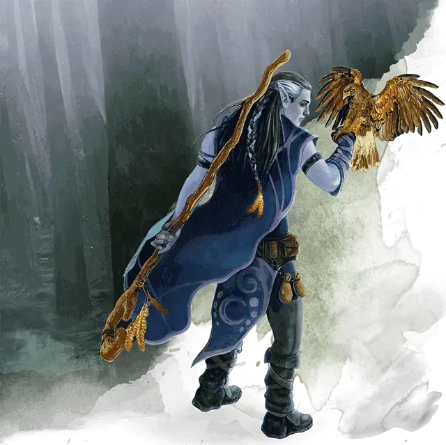

Друид
Druid

Кость Хитов 1к8 за каждый уровень друида
Хиты на 1 уровне 8 + ваш модификатор Телосложения
Хиты на следующих уровнях 1к8 (или 5) + модификатор Телосложения (суммарно минимум 1) за каждый уровень друида после первого
Доспехи Лёгкие доспехи, средние доспехи, щиты (друиды не носят доспехи и щиты из металла)
Оружие Боевые посохи, булавы, дротики, дубинки, кинжалы, копья, метательные копья, пращи, серпы, скимитары
Инструменты Набор травника
Спасброски Интеллект, Мудрость
Навыки Выберите два навыка из следующих: Восприятие, Выживание, Магия, Медицина, Уход за животными, Природа, Проницательность, Религия
Снаряжение Вы начинаете со следующим снаряжением в дополнение к снаряжению, полученному за вашу предысторию:
• а) деревянный щит или б) одно простое оружие
• а) скимитар или б) простое рукопашное оружие
• Кожаный доспех, набор путешественника и фокусировка друидов
Если вы откажетесь от этого снаряжения, а также от предметов, предлагаемых вашей предысторией, то вы начнёте игру с 2к4 × 10 зм для покупки снаряжения.
| Уровень | Бонус мастерства | Умения | Известные заговоры | Ячейки заклинаний на уровень заклинаний | ||||||||
|---|---|---|---|---|---|---|---|---|---|---|---|---|
| 1 | 2 | 3 | 4 | 5 | 6 | 7 | 8 | 9 | ||||
| 1 | +2 | Друидический язык, Использование заклинаний, Дополнительные заклинания | 2 | 2 | - | - | - | - | - | - | - | - |
| 2 | +2 | Круг друидов, Дикий облик, Дикий спутник | 2 | 3 | - | - | - | - | - | - | - | - |
| 3 | +2 | - | 2 | 4 | 2 | - | - | - | - | - | - | - |
| 4 | +2 | Улучшение дикого облика, Увеличение характеристик, Универсальность заговоров | 3 | 4 | 3 | - | - | - | - | - | - | - |
| 5 | +3 | - | 3 | 4 | 3 | 2 | - | - | - | - | - | - |
| 6 | +3 | Умение круга друидов | 3 | 4 | 3 | 3 | - | - | - | - | - | - |
| 7 | +3 | - | 3 | 4 | 3 | 3 | 1 | - | - | - | - | - |
| 8 | +3 | Улучшение дикого облика, Увеличение характеристик | 3 | 4 | 3 | 3 | 2 | - | - | - | - | - |
| 9 | +4 | - | 3 | 4 | 3 | 3 | 3 | 1 | - | - | - | - |
| 10 | +4 | Умение круга друидов | 4 | 4 | 3 | 3 | 3 | 2 | - | - | - | - |
| 11 | +4 | - | 4 | 4 | 3 | 3 | 3 | 2 | 1 | - | - | - |
| 12 | +4 | Увеличение характеристик | 4 | 4 | 3 | 3 | 3 | 2 | 1 | - | - | - |
| 13 | +5 | - | 4 | 4 | 3 | 3 | 3 | 2 | 1 | 1 | - | - |
| 14 | +5 | Умение круга друидов | 4 | 4 | 3 | 3 | 3 | 2 | 1 | 1 | - | - |
| 15 | +5 | - | 4 | 4 | 3 | 3 | 3 | 2 | 1 | 1 | 1 | - |
| 16 | +5 | Увеличение характеристик | 4 | 4 | 3 | 3 | 3 | 2 | 1 | 1 | 1 | - |
| 17 | +6 | - | 4 | 4 | 3 | 3 | 3 | 2 | 1 | 1 | 1 | 1 |
| 18 | +6 | Безвременное тело, Заклинания зверя | 4 | 4 | 3 | 3 | 3 | 3 | 1 | 1 | 1 | 1 |
| 19 | +6 | Увеличение характеристик | 4 | 4 | 3 | 3 | 3 | 3 | 2 | 1 | 1 | 1 |
| 20 | +6 | Архидруид | 4 | 4 | 3 | 3 | 3 | 3 | 2 | 2 | 1 | 1 |
Описание
Вскидывая вверх сучковатый посох из остролиста, эльф вызывает буйство небесной стихии и обрушивает разряды молний на орков, посмевших угрожать его лесу огнём. Затаившись высоко в кроне дерева, человек в облике леопарда смотрит из джунглей на чужеродную архитектуру храма Злой Стихии Воздуха и пристально наблюдает за действиями культистов. Рубя клинком из чистого пламени, полуэльф бросается в гущу армии скелетов, чтобы уничтожить кощунственную магию, возвратившую им извращённое подобие жизни.
Призывая стихии или подражая животным, друиды воплощают незыблемость, приспособляемость и гнев природы. Они ни в коем случае не владыки природы — вместо этого друиды ощущают себя частью её неодолимой воли.
Использовать TCE
Создание персонажа
Сила природы
Выше чего-либо другого друиды почитают природу. Именно она является источником всех их заклинаний и магических способностей, непосредственно или через природное божество. Многие предпочитают духовный путь конечного единения с природой, но есть и те, кто служат богам диких просторов, животных или стихий. Длящиеся испокон веков обычаи друидов также называют Старой Верой, противопоставляя их поклонению в храмах и у алтарей.
Заклинания друидов воздействуют через животных и окружающую природу. Это сила клыка и когтя, солнца и луны, огня и бури. Также друиды учатся принимать облик животных, и некоторые настолько углубляются в это умение, что родному облику предпочитают звериный.
Сохранение равновесия
Для друидов природа представляет собой шаткое равновесие. Воздух, земля, огонь и вода — те четыре стихии, что составляют основу мира — должны уравновешивать друг друга. Если одна из стихий обретёт превосходство, сам мир может прекратить существование, притянутый стихийным измерением и разорванный на элементарные составляющие. Чтобы не допустить этого, друиды противостоят сектам Стихийного Зла и всем, кто стремится наделить любую из стихий превосходящей силой. Также друидов заботит тонкое экологическое равновесие, необходимое флоре и фауне, и готовность цивилизованных поселений жить в гармонии с природой, а не противопоставлять себя ей. Жестокость природы — часть естественного порядка вещей, однако друиды не терпят всё чужеродное, включая аберрации (иллитиды и бехолдеры) и нежить (зомби и вампиры). Иногда друиды совершают вылазки на таких существ, особенно если те приближаются к их территориям. Священная земля и области нетронутой природы нередко охраняются друидом. Впрочем, при достаточной угрозе естественному равновесию или подзащитной земле друид может перейти к активной борьбе с напастью, ступив на путь искателя приключений.
Создание друида
Создавая персонажа друида, подумайте о том, что сформировало его тесную связь с природой. Возможно, он родом из мест, где жива Старая Вера. Или же его, брошенного ребёнком в чаще леса, нашёл и вырастил друид. Возможно, персонаж испытал волнующий опыт встречи с духом природы — скажем, пережил нападение гигантского орла или лютого волка. Может, персонаж родился в разгар бури или во время извержения вулкана, что стало знаком уготованного ему пути друида. Всегда ли он был странствующим друидом или же когда-то охранял рощу или ручей? Возможно, зло отравило его родину, и он отправился в большой мир в поисках нового смысла и надежды.
Быстрое создание
Вы можете быстро создать друида, следуя этим рекомендациям. Во-первых, у вашей Мудрости должно быть наивысшее значение. Следующим по величине должно быть значение Телосложения. Во-вторых, выберите предысторию «отшельник».
Углублённая предыстория Друида (XGE)
Друиды являются хранителями природного мира, и считается, что со временем друид становится голосом природы, которая, по правде сказать, слишком неуловима для простого люда. Многие, став друидами, понимают, что они тяготеют к природе; её силы, циклы и движения наполняют их умы и души изумлением и проницательностью. Многие ученые и мудрецы изучали природу, слагая тома об этих таинствах и силе, но друиды – особый тип существ: в какой-то момент они начинают воплощать эти природные силы, производя магические явления, которые связывают их с духом природы и потоком жизни. Окружающие часто почитают, избегают или считают друидов опасными из-за их странной и таинственной силы.
Ваш друид может быть истинным поклонником природы, тем, кто всегда презирал цивилизацию и нашел утешение в диких землях. Или ваш персонаж может быть городским жителем, который теперь стремится привести цивилизованный мир в гармонию с дикой природой. Вы можете использовать нижеприведенные разделы чтобы придать деталей вашему друиду вне зависимости от того, как он попал в эту профессию.
Любимый предмет
Некоторые друиды носят один или несколько предметов, священных для них или имеющих глубокое личное значение. Такие предметы не обязательно волшебны, но каждый из них является объектом, олицетворяющим связь разума и сердца друида с конкретной концепцией или духовным мировоззрением.
Когда вы решите каким будет ваш любимый предмет, подумайте над тем чтобы создать для него историю: как к вам попал этот предмет и почему он так важен для вас?
Любимый предмет
| к6 | Предмет |
| 1 | Веточка дерева собраний, которое стоит в центре вашей деревни |
| 2 | Флакон с водой из источника святой реки |
| 3 | Специальные травы, перевязанные в пучок |
| 4 | Маленькая бронзовая чаша с выгравированными изображениями животных |
| 5 | Погремушка сделанная из высушенной тыквы и падубных ягод |
| 6 | Миниатюрный золотой серп, переданный вам вашим наставником |
Направляющий аспект
Многие друиды чувствуют сильную связь с конкретным аспектом естественного мира, например, с водоемом, животным, типом дерева или каким-либо другим видом растения. Вы отождествляете себя с выбранным аспектом; своим поведением и самой своей природой он служит примером, которому вы пытаетесь подражать.
Направляющие аспекты
| к6 | Направляющий аспект |
| 1 | Тисовое дерево напоминает вам об обновлении разума и духа, позволяя старому отмереть и новому прорасти. |
| 2 | Дубы представляют силу и жизнелюбие. Медитация под дубом наполняет ваши тело и разум решимостью и стойкостью. |
| 3 | Бесконечный поток реки напоминает вам о величии мира. Вы стремитесь действовать с учетом долгосрочных интересов природы. |
| 4 | Море – постоянный бурлящий котел силы и хаоса. Это напоминает вам, что принятие изменений необходимо для выживания в мире. |
| 5 | Птицы в небе свидетельствуют о том, что даже самые маленькие существа могут выжить, если они останутся выше битвы. |
| 6 | Как видно из действий волка, сила одного ничто по сравнению с силой стаи. |
Наставник
Не редкость для будущих друидов искать (или быть найденными) учителей или старейшин, которые научат их основам их магического искусства. Большинство друидов, которые учатся у наставника, начинают свое обучение в молодом возрасте, а наставник играет жизненно важную роль в формировании взглядов и убеждений ученика.
Если ваш персонаж учился у кого-то другого, кто или что это была за личность, и какова была природа ваших отношений? Ваш наставник наделил вас определенным взглядом или иным образом повлиял на ваш подход к достижению целей выбранного вами пути?
Наставники
| к6 | Наставник |
| 1 | Ваш наставник был мудрым трентом, который учил вас мыслить категориями годов и десятилетий, а не дней и месяцев. |
| 2 | Вы были обучены дриадой, которая наблюдала за дремлющим порталом в Бездну. Во время вашего обучения вам было поручено наблюдать за скрытыми угрозами миру. |
| 3 | Ваш учитель всегда взаимодействовал с вами в форме сокола. Вы никогда не видели гуманоидную форму наставника. |
| 4 | Вы были одним из нескольких молодых людей, которые были учениками старого друида, пока один из учеников не предал вашу группу и не убил вашего наставника. |
| 5 | Ваш наставник являлся вам только в видениях. Вам еще предстоит встретиться с этой личностью, и вы не уверены, что такая личность существует в телесной форме. |
| 6 | Ваш наставник был вермедведем, который научил вас относиться ко всякой живой твари с равным уважением. |
Изучение дикого облика
Умение «Дикий облик» в «Книге игрока» позволяет превращаться в зверя, которого вы видели. Это правило даёт вам потрясающую гибкость, позволяя легко изучить множество животных обликов, но вы должны соблюдать ограничения таблицы «Дикий облик» в «Книге игрока».
Когда вы получаете умение «Дикий облик» на 2-м уровне друида, вы можете задаться вопросом, каких зверей вы уже видели. Следующие таблицы распределяют зверей из «Бестиария» по их наиболее вероятным средам обитания. Подумайте, в какой среде вырос ваш друид, а затем обратитесь к соответствующей таблице за списком зверей, которых, вероятно, видел ваш друид ко 2-му уровню.
Эти таблицы также могут помочь вам и вашему Мастеру определить, каких зверей вы можете увидеть в своих путешествиях. Кроме того, они включают в себя показатель опасности каждого зверя и наличие у зверя скорости полёта или плавания. Эта информация поможет вам определить, можете ли вы принять форму этого зверя.
Таблицы включают в себя всех отдельных зверей, которые могут быть использованы для дикого облика (до показателя опасности 1) или для умения «Облики круга» в круге луны (до показателя опасности 6).
Арктика
| ПО | Животное | Скорость полёта/плаванья |
| 0 | сова [owl] | Скорость полёта |
| 1/8 | кровавый ястреб [blood Hawk] | Скорость полёта |
| 1/4 | гигантская сова [giant owl] | Скорость полёта |
| 1 | бурый медведь [brown bear] | — |
| 2 | белый медведь [polar bear] | Скорость плавания |
| 2 | саблезубый тигр [saber-toothed tiger] | — |
| 6 | мамонт [mammoth] | — |
Болото
| ПО | Животное | Скорость полёта/плаванья |
| 0 | крыса [rat] | — |
| 0 | ворон [raven] | Скорость полёта |
| 1/8 | гигантская крыса [giant rat] | — |
| 1/8 | ядовитая змея [poisonous snake] | Скорость плавания |
| 1/8 | кровопийца [stirge] | Скорость полёта |
| 1/4 | удав [constrictor snake] | Скорость плавания |
| 1/4 | гигантская лягушка [giant frog] | Скорость плавания |
| 1/4 | гигантская ящерица [giant lizard] | — |
| 1/4 | гигантская ядовитая змея [giant poisonous snake] | Скорость плавания |
| 1/2 | крокодил [crocodile] | Скорость плавания |
| 1 | гигантский паук [giant spider] | — |
| 1 | гигантская жаба [giant toad] | Скорость плавания |
| 2 | гигантский удав [giant constrictor snake] | Скорость плавания |
| 5 | гигантский крокодил [giant crocodile] | Скорость плавания |
Горы
| ПО | Животное | Скорость полёта/плаванья |
| 0 | орел [eagle] | Скорость полёта |
| 0 | козел [goat] | — |
| 1/8 | кровавый ястреб [blood Hawk] | Скорость полёта |
| 1/8 | кровопийца [stirge] | Скорость полёта |
| 1/4 | птеранодон [pteranodon] | Скорость полёта |
| 1/2 | гигантский козел [giant goat] | — |
| 1 | гигантский орёл [giant eagle] | Скорость полёта |
| 1 | лев [lion] | — |
| 2 | гигантский лось [giant elk] | — |
| 2 | саблезубый тигр [saber-toothed tiger] | — |
Лес
Луг
Побережье
| ПО | Животное | Скорость полёта/плаванья |
| 0 | краб [crab] | Скорость плавания |
| 0 | орел [eagle] | Скорость полёта |
| 1/8 | кровавый ястреб [blood Hawk] | Скорость полёта |
| 1/8 | гигантский краб [giant crab] | Скорость плавания |
| 1/8 | ядовитая змея [poisonous snake] | Скорость плавания |
| 1/8 | кровопийца [stirge] | Скорость полёта |
| 1/4 | гигантская ящерица [giant lizard] | — |
| 1/4 | гигантский паук-волк [giant wolf spider] | — |
| 1/4 | птеранодон [pteranodon] | Скорость полёта |
| 1 | гигантский орёл [giant eagle] | Скорость полёта |
| 1 | гигантская жаба [giant toad] | Скорость плавания |
| 2 | плезиозавр [plesiosaurus] | Скорость плавания |
Под водой
| ПО | Животное | Скорость полёта/плаванья |
| 0 | квиппер [quipper] | Скорость плавания |
| 1/4 | удав [constrictor snake] | Скорость плавания |
| 1/2 | гигантский морской конек [giant sea horse] | Скорость плавания |
| 1/2 | рифовая акула [reef shark] | Скорость плавания |
| 1 | гигантский осьминог [giant octopus] | Скорость плавания |
| 2 | гигантский удав [giant constrictor snake] | Скорость плавания |
| 2 | охотничья акула [hunter shark] | Скорость плавания |
| 2 | плезиозавр [plesiosaurus] | Скорость плавания |
| 3 | косатка [killer whale] | Скорость плавания |
| 5 | гигантская акула [giant shark] | Скорость плавания |
Подземье
| ПО | Животное | Скорость полёта/плаванья |
| 0 | гигантский огненный жук [giant fire beettle] | — |
| 1/8 | гигантская крыса [giant rat] | — |
| 1/8 | кровопийца [stirge] | Скорость полёта |
| 1/4 | гигантская летучая мышь [giant bat] | Скорость полёта |
| 1/4 | гигантская многоножка [giant centipede] | — |
| 1/4 | гигантская ящерица [giant lizard] | — |
| 1/4 | гигантская ядовитая змея [giant poisonous snake] | Скорость плавания |
| 1 | гигантский паук [giant spider] | — |
| 1 | гигантская жаба [giant toad] | Скорость плавания |
| 2 | гигантский удав [giant constrictor snake] | Скорость плавания |
| 2 | белый медведь [polar bear] (пещерный медведь) | Скорость плавания |
Пустыня
| ПО | Животное | Скорость полёта/плаванья |
| 0 | кошка [cat] | — |
| 0 | гиена [hyena] | — |
| 0 | шакал [jackal] | — |
| 0 | скорпион [scorpion] | — |
| 0 | гриф [vulture] | Скорость полёта |
| 1/8 | верблюд [camel] | — |
| 1/8 | летающая змея [flying snake] | Скорость полёта |
| 1/8 | мул [mule] | — |
| 1/8 | ядовитая змея [poisonous snake] | Скорость плавания |
| 1/8 | кровопийца [stirge] | Скорость полёта |
| 1/4 | удав [constrictor snake] | Скорость плавания |
| 1/4 | гигантская ящерица [giant lizard] | — |
| 1/4 | гигантская ядовитая змея [giant poisonous snake] | Скорость плавания |
| 1/4 | гигантский паук-волк [giant wolf spider] | — |
| 1 | гигантская гиена [giant hyena] | — |
| 1 | гигантский паук [giant spider] | — |
| 1 | гигантская жаба [giant toad] | Скорость плавания |
| 1 | гигантский гриф [giant vulture] | Скорость полёта |
| 1 | лев [lion] | — |
| 2 | гигантский удав [giant constrictor snake] | Скорость плавания |
| 3 | гигантский скорпион [giant scorpion] | — |
Холмы
| ПО | Животное | Скорость полёта/плаванья |
| 0 | бабуин [baboon] | — |
| 0 | орел [eagle] | Скорость полёта |
| 0 | козел [goat] | — |
| 0 | гиена [hyena] | — |
| 0 | ворона [crow] | Скорость полёта |
| 0 | гриф [vulture] | Скорость полёта |
| 1/8 | кровавый ястреб [blood Hawk] | Скорость полёта |
| 1/8 | гигантская куница [giant weasel] | — |
| 1/8 | мастиф [mastiff] | — |
| 1/8 | мул [mule] | — |
| 1/8 | ядовитая змея [poisonous snake] | Скорость плавания |
| 1/8 | кровопийца [stirge] | Скорость полёта |
| 1/4 | топороклюв [axe beak] | — |
| 1/4 | кабан [boar] | — |
| 1/4 | лось [elk] | — |
| 1/4 | гигантская сова [giant owl] | Скорость полёта |
| 1/4 | гигантский паук-волк [giant wolf spider] | — |
| 1/4 | пантера [panther] (пума) | — |
| 1/4 | волк [wolf] | — |
| 1/2 | гигантский козел [giant goat] | — |
| 1 | бурый медведь [brown bear] | — |
| 1 | лютый волк [dire wolf] | — |
| 1 | гигантский орёл [giant eagle] | Скорость полёта |
| 1 | гигантская гиена [giant hyena] | — |
| 1 | лев [lion] | — |
| 2 | гигантский кабан [giant boar] | — |
| 2 | гигантский лось [giant elk] | — |
Мультиклассирование
МУЛЬТИКЛАССИРОВАНИЕ И Друид
Если вы используете опциональное правило по мультиклассированию из «Книги игрока», вот что вам нужно знать при выборе друида в качестве одного из ваших классов.
Минимальные значения характеристик. Вы должны иметь значение Мудрости не ниже 13, чтобы взять уровень в этом классе или взять уровень другого класса, если вы уже являетесь друидом.
Получаемые владения. Если друид не является вашим начальным классом, вот владения, которые вы приобретаете, когда берёте свой первый уровень друида: лёгкие доспехи, средние доспехи, щиты (друиды не носят и не используют доспехи и щиты из металла).
Ячейки заклинаний. Добавьте ваш уровень в классе друида к соответствующим уровням других классов, чтобы определить доступные ячейки заклинаний.
Уровень 1: Друидический язык
1-й уровень, умение друида
Вы знаете Друидический язык — тайный язык друидов. Вы можете на нём говорить и оставлять тайные послания. Вы и все, кто знает этот язык, автоматически замечаете эти послания. Другие замечают присутствие послания при успешной проверке Мудрости (Восприятие) Сл 15, но без помощи магии не могут расшифровать его.
Уровень 1: Использование заклинаний
1-й уровень, умение друида
Для накладывания заклинаний друиды пользуются сакральной эссенцией самой природы, облачая в неё свою волю. Вы найдёте список заклинаний, доступных друиду в этом разделе: заклинания друида. Так же правила по использованию заклинаний есть в этой статье: использование заклинаний.
Уровень 1: Заговоры (заклинания 0-го уровня)
На 1-м уровне вы знаете два заговора на ваш выбор из списка заклинаний друида. Вы узнаёте дополнительные заговоры друида на более высоких уровнях, как показано в колонке «Известные заговоры».
Уровень 1: Подготовка и сотворение заклинаний
Таблица «Друид» показывает, какое количество ячеек для накладывания заклинаний друида у вас есть на первом и более высоких уровнях. Для накладывания одного из этих заклинаний вы должны потратить ячейку заклинания того же уровня или выше, что и само заклинание. Вы восстановите все потраченные ячейки, когда завершите продолжительный отдых. Вы подготавливаете список заклинаний друида, доступных для накладывания. При этом вы выбираете число заклинаний друида из списка заклинаний друида, равное модификатору Мудрости + уровень друида (минимум одно заклинание). Уровень заклинаний не должен превышать уровень самой высокой имеющейся у вас ячейки заклинаний.
Например, если вы друид 3-го уровня, то у вас есть четыре ячейки заклинаний 1-го уровня и две ячейки 2-го уровня. При Мудрости 16 ваш список подготовленных заклинаний может включать в себя шесть заклинаний 1-го или 2-го уровня, в любой комбинации. Если вы подготовили заклинание 1-го уровня лечение ран [cure wounds], вы можете наложить его, используя ячейку 1-го уровня или ячейку 2-го уровня. Накладывание заклинания не удаляет его из списка подготовленных заклинаний.
Вы можете изменить список подготовленных заклинаний, когда завершаете продолжительный отдых. Подготовка нового списка заклинаний друида требует времени, проведённого в молитвах и медитации: не менее 1 минуты за уровень заклинания для каждого заклинания в вашем списке.
Уровень 1: Базовая характеристика заклинаний
Друидические заклинания накладываются с помощью Мудрости, поскольку требуют веры и близости с природой. Вы используете Мудрость в случаях, когда заклинание ссылается на базовую характеристику. Кроме того, вы используете модификатор Мудрости при определении Сл спасбросков от ваших заклинаний друида, и при броске атаки заклинаниями.
Сл спасброска = 8 + ваш бонус мастерства + ваш модификатор Мудрости
Модификатор броска атаки = ваш бонус мастерства + ваш модификатор Мудрости
Уровень 1: Ритуальное колдовство
Вы можете сотворить заклинание друида как ритуал, если у этого заклинания есть ключевое слово «ритуал», и оно подготовлено вами.
Уровень 1: Фокусировка заклинания
Вы можете использовать фокусировку друидов в качестве заклинательной фокусировки для заклинаний друида.
Священные растения
Некоторые растения считаются священными у друидов. В частности, это берёза, бузина, дуб, ива, можжевельник, ольха, омела, орех, падуб (он же остролист), рябина, тис и ясень. Эти растения часто используются в изготовлении друидической фокусировки, которая может включать, например, ветви дуба или тиса, побеги омелы.
Древесина подходит и для других изделий, включая оружие и щиты. Тис связан со смертью и перерождением, так что из него делают рукояти скимитаров и серпов. Ясень символизирует жизнь, а дуб — силу: из них получаются замечательные древки, дубины, боевые посохи и щиты. Ольху считают растением воздуха и делают из неё метательное оружие, например, дротики и метательные копья. Друиды из мест, которым эти растения чужды, обращаются к местным видам. Например, пустынный друид может почитать юкку и кактус.
Уровень 1: Дополнительные заклинания друидов (опционально)
Заклинания из представленного ниже списка расширяют ваш список заклинаний друида, представленный в «Книге игрока». Список отсортирован по уровню заклинаний, а не по уровню персонажа. Если заклинание может быть наложено как ритуал, то в скобках также будет указано «ритуал».
Уровень 2: Дикий облик
2-й уровень, умение друида
Действием вы можете магическим образом принять облик любого Зверя, которого вы видели. Вы можете использовать это умение два раза, восстанавливая использования после короткого или продолжительного отдыха.
Уровень друида определяет, в каких Зверей можно превращаться. Например, на 2-м уровне можно превращаться в животное с показателем опасности не более 1/4 без скорости полёта и плавания.
Облик ЗВЕРЯ
| Уровень | Макс. ПО | Ограничения | Список | Пример |
| 2 | ¼ | Без скорости плавания и полёта | список | Волк [wolf] |
| 4 | ½ | Без скорости полёта | список | Крокодил [crocodile] |
| 8 | 1 | - | список | Гигантский орел [giant eagle] |
В облике зверя можно оставаться количество часов, равное половине уровня друида (округляя в меньшую сторону). Затем друид возвращается в нормальный облик, если только не потратит еще одно использование «Дикого облика». Бонусным действием можно вернуться в нормальный облик досрочно. Бессознательный, доведённый до 0 хитов или мёртвый друид сразу возвращается в нормальный облик.
Когда вы превращены, действуют следующие правила:
- Вся игровая статистика берётся из статистики Зверя, но сохраняются мировоззрение, личность и значения Интеллекта, Мудрости и Харизмы. Также у вас остаются владения навыками и спасбросками в дополнение к таковым нового облика. Если владение есть и у вас, и у Зверя, но у него бонус выше, используется бонус Зверя. Легендарные действия и действия в логове недоступны.
- Когда вы превращены, вы принимаете хиты и Кость Хитов Зверя. Вернувшись в нормальный облик, ваши хиты будут такими же, как до превращения. Однако, если вы вернулись в свой облик из-за того, что ваши хиты опустились до 0, «лишний» урон переносится на нормальный облик. Например, если вы в облике Зверя получили 10 урона, имея при этом 1 хит, то вы возвращаетесь в нормальный облик и получаете 9 урона. Если этот урон не довёл хиты персонажа до 0, он не теряет сознание.
- Вы не можете накладывать заклинания, а речь и действия, требующие рук, могут быть ограничены видом Зверя. Превращение не прерывает вашу концентрацию на уже наложенных заклинаниях и не мешает совершать действия, являющиеся частью заклинания, такие как в случае заклинания призыв молнии [call lightning].
- Вы сохраняете преимущества от всех умений класса, расы и прочих источников и можете пользоваться ими, если этому не препятствует новый физический облик. Однако недоступны особые чувства, такие как тёмное зрение, если только их нет у Зверя.
- Вы выбираете, упадет ли ваше снаряжение на землю в вашем пространстве, сольется с вашей новой формой или будет надето на нее. Носимое снаряжение функционирует как обычно, но Мастер решает, может ли новая форма, в зависимости от сложения и размера, носить тот или иной предмет снаряжения. Снаряжение не меняет форму и размер под новый облик, и если оно не подходит новому облику, оно должно остаться на земле или слиться с новым обликом. Слившееся с обликом снаряжение не работает, пока вы опять не примете свой облик.
Уровень 2: Дикий спутник (опционально)
Вы получаете способность призывать духа, который принимает форму животного. Действием вы можете использовать «Дикий облик» для накладывания заклинания поиск фамильяра [find familiar] без затрат материальных компонентов.
Когда вы накладываете это заклинание подобным образом, фамильяр считается Феей, а не Зверем. Фамильяр исчезает спустя количество часов, равное половине вашего уровня друида.
Уровень 2: Круг друидов
2-й уровень, умение друида
Вам необходимо выбрать, в каком круге друидов состоит персонаж. Все круги описаны в конце описания класса. Этот выбор даёт дополнительные умения на 2-м, 6-м, 10-м и 14-м уровнях.
Уровень 4: Увеличение характеристик
4-й уровень, умение друида
При достижении 4-го, 8-го, 12-го, 16-го и 19-го уровней вы можете повысить значение одной из ваших характеристик на 2 или двух характеристик на 1. Как обычно, значение характеристики при этом не должно превысить 20.
Если ваш Мастер разрешает использование черт, вы можете отказаться от преимуществ этого умения при повышении значений характеристик и вместо этого взять черту.
Уровень 4: Универсальность заговоров (опционально)
Всякий раз, когда вы достигаете в этом классе уровня, который предоставляет вам «Увеличение характеристик», вы можете заменить один заговор, полученный умением «Использование заклинаний» этого класса, на другой заговор из списка заклинаний друида.
Уровень 18: Безвременное тело
18-й уровень, умение друида
Пронизывающая вас природная магия замедляет старение. За каждые 10 лет ваше тело стареет только на 1 год.
Уровень 18: Заклинания зверя
18-й уровень, умение друида
Персонаж может накладывать в диком облике заклинания друида. Будучи Зверем, вы можете использовать соматический и вербальный компоненты заклинаний друида, но не можете обеспечить материальные компоненты.
Уровень 20: Архидруид
20-й уровень, умение друида
Количество применений умения «Дикий облик» не ограничено. Кроме того, вы можете игнорировать соматический и вербальный компоненты заклинаний друида, а также материальные компоненты без указанной стоимости и не расходуемые заклинанием. Это действует как в нормальном облике, так и в облике Зверя.
Подклассы
Круг земли
Круг Земли состоит из мистиков и мудрецов, поколениями передающих из уст в уста сложную систему древних знаний и обрядов. Собрания проводятся в кольце деревьев или мегалитов, где на тайном языке звучат секреты самого мироздания. Мудрейшие представители круга служат духовными лидерами и советниками вождей в общинах, проповедующих Старую Веру. Причастность к кругу Земли наделяет магию друида силой тех мест, где персонажа посвятили в священные таинства.
Уровень 2: Дополнительный заговор
Вы осваиваете один дополнительный заговор друида на свой выбор. Этот заговор не учитывается в общем количестве известных вам заговоров друида.
Уровень 2: Естественное восстановление
Единение с природой через медитацию позволяет вам частично восстановить магическую силу. Во время короткого отдыха можно восстановить потраченные ячейки заклинаний. Сумма уровней выбранных ячеек не должна превышать половину уровня друида (округляя в большую сторону), и ни одна ячейка не может быть 6-го уровня или выше. Применение этого умения восстанавливается после продолжительного отдыха.
Например, будучи друидом 4-го уровня, вы можете восстановить два уровня ячеек заклинаний. Вы можете восстановить или ячейку 2-го уровня или две ячейки 1-го уровня.
Уровень 3: Заклинания круга
Духовная связь друида с землёй наделяет его некоторыми заклинаниями. На 3-м, 5-м, 7-м и 9-м уровнях друид получает доступ к заклинаниям в соответствии с землёй, где он был посвящён. Необходимо выбрать болото, гору, лес, луг, побережье, Подземье, пустыню или тундру.
Получив доступ к заклинанию круга, вы будете всегда иметь его подготовленным, и оно не учитывается при подсчёте количества заклинаний, которые можно подготовить. Если вы получаете доступ к заклинанию, отсутствующему в списке заклинаний друида, оно всё равно будет считаться для вас заклинанием друида.
Уровень 6: Тропами земли
Перемещение по немагической труднопроходимой местности не затрудняет перемещение. Вы также можете проходить через немагическую растительность без снижения скорости и не получая урона от их шипов, выростов и других помех.
Кроме того, вы совершаете с преимуществом спасброски от магически созданных или изменённых растений, которые должны затруднять перемещение — например, от заклинания опутывание [entangle].
Уровень 10: Покровительство природы
Вы не можете быть очарованным или напуганным Феями и Элементалями. Вы также получаете иммунитет к болезням и ядам.
Уровень 14: Природная благодать
Природные создания начинают чувствовать вашу тесную связь с естественным миром и остерегаются нападать. Когда Зверь или Растение атакует вас, это существо должно совершить спасбросок Мудрости против Сл спасброска заклинания друида. В случае провала существо должно выбрать иную цель, или же его атака автоматически промахивается. В случае успеха существо получает иммунитет к данному эффекту на 24 часа.
Существо осознаёт этот эффект еще до попытки атаковать вас.
Болото
| Уровень друида | Заклинания круга |
| 3 | мельфова кислотная стрела [melf’s acid arrow], тьма [darkness] |
| 5 | зловонное облако [stinking cloud], хождение по воде [water walk] |
| 7 | поиск существа [locate creature], свобода перемещения [freedom of movement] |
| 9 | наблюдение [scrying], нашествие насекомых [insect plague] |
Гора
Лес
Луг
Побережье
Подземье
Пустыня
Тундра
Круг луны
Друиды круга луны — непримиримые стражи дикой природы. Их собрания проходят под полной луной для обмена новостями и предостережениями. Стражи рыщут в самой дремучей глуши, где можно неделями не встретить другого гуманоида, не говоря уже о друиде.
Переменчивые как сама луна и дикие до глубины души, друиды этого круга то крадутся кошкой, то парят орлом, то ломятся в облике медведя, устрашая забредшее чудище.
Уровень 2: Боевой дикий облик
Вы можете использовать умение «Дикий облик» бонусным действием, а не действием.
Кроме того, пока вы перевоплощены умением «Дикий облик», вы можете бонусным действием потратить ячейку заклинания, чтобы восстановить 1к8 хитов за каждый уровень потраченной ячейки.
Уровень 2: Облики круга
Обряды круга луны позволяют принимать облик более опасных животных. Вы можете превращаться в Зверя с показателем опасности до 1 (игнорируйте столбец «Макс. ПО» таблицы «Облик зверя»).
Начиная с 6-го уровня, вы можете превращаться в Зверя с показателем опасности вплоть до уровня друида, поделённого на 3 (округляя в меньшую сторону).
Таким образом, для вас таблица "Облик зверя" выглядит так:
| Уровень | Макс. ПО | Ограничения | Список |
| 2 | 1 | Без скорости плавания и полёта | список |
| 4 | 1 | Без скорости полёта | список |
| 6 | 2 | Без скорости полёта | список |
| 8 | 2 | - | список |
| 9 | 3 | - | список |
| 12 | 4 | - | список |
| 15 | 5 | - | список |
| 18 | 6 | - | список |
Уровень 6: Природный удар
Ваши атаки в облике Зверя считаются магическими для преодоления сопротивления и иммунитета к немагическим атакам и урону.
Уровень 10: Стихийный дикий облик
Вы можете потратить сразу два использования «Дикого облика», чтобы принять облик водяного, воздушного, земляного или огненного элементаля.
Уровень 14: Тысяча лиц
Вы понимаете, как магически изменять детали своего облика. Вы можете неограниченно накладывать заклинание смена обличья [alter self].
Круг пастыря
Источник: «Xanathar’s Guide to Everything»
Друиды круга пастыря общаются с духами природы, особенно с духами зверей и фей, и взывают к этим духам за помощью. Эти друиды признают, что все живые существа играют свою роль в природе, но они сосредотачиваются на защите животных и фей, которым трудно защитить себя. Известные как пастыри, эти друиды считают таких существ своими подзащитными. Они отражают атаки чудовищ, угрожающих им, отгоняют охотников, убивающих больше добычи, чем необходимо, не позволяют цивилизации вторгаться в среду обитания редких животных и священные места фей.
Многие из этих друидов счастливы вдали от больших городов, довольствуясь тем, что проводят свои дни в обществе животных и фей из дикой природы. Члены этого круга становятся искателями приключений, чтобы противостоять силам, угрожающим их подзащитным, или искать знания и силу, которые помогут им лучше охранять своих подопечных. Куда бы ни пошли эти друиды, духи дикой природы всюду следуют за ними.
Уровень 2: Речь лесов
Вы получаете возможность говорить с животными и многими феями. Вы научились говорить, читать и писать на Сильване.
Кроме того, Звери могут понять вашу речь, а вы можете расшифровывать звуки и движения, которые они производят. У большинства животных недостаточно интеллекта для передачи или понимания сложных концепций, но дружелюбный Зверь может рассказать то, что он видел или слышал в недавнем прошлом.
Эта способность не делает животных вашими друзьями, хотя вы можете совмещать её вместе с подарками, как если бы вы пытались завоевать доверие других НИП.
Уровень 2: Тотем духов
Вы можете вызывать духов природы, чтобы влиять на окружающий вас мир. Вы можете бонусным действием магическим образом вызвать бестелесный дух в точке, которую вы можете видеть в 60 футах. Дух создает ауру в радиусе 30 футов вокруг этой точки. Он не считается ни существом, ни объектом, хотя он имеет спектральный вид того существа, которое представляет. Вы можете бонусным действием перемещать дух на расстояние до 60 футов в пределах видимости. Дух существует в течение 1 минуты или пока вы не станете недееспособным. Использовав это умение, вы не можете использовать его повторно до окончания короткого или продолжительного отдыха.
Эффект ауры духа зависит от типа духа, который вы вызываете из нижеперечисленных вариантов:
- Дух единорога. Дух единорога дарует свою защиту окружающим. Вы и ваши союзники совершаете с преимуществом все проверки характеристик для обнаружения существ в ауре духа. Кроме того, если вы накладываете заклинание, используя ячейку заклинания, и оно восстанавливает хиты любого существа внутри или вне ауры, существа по вашему выбору, находящиеся внутри ауры, также восстанавливают хиты в количестве, равном вашему уровню друида.
- Дух медведя. Дух медведя даёт вам и вашим союзникам силу и выносливость. Каждое выбранное вами существо из тех, кто находится в области ауры в момент появления духа, получает временные хиты в количестве, равном 5 + ваш уровень друида. Кроме того, вы и ваши союзники совершаете с преимуществом проверки Силы и спасброски Силы, пока находитесь в ауре.
- Дух ястреба. Дух ястреба — непревзойдённый охотник, помогающий вам и вашим союзникам своим острым взглядом. Когда существо совершает бросок атаки по цели, находящейся в ауре духа, вы можете реакцией дать преимущество на этот бросок. Кроме того, вы и ваши союзники совершаете с преимуществом проверки Мудрости (Восприятие), пока находитесь в ауре.
Уровень 6: Могущественный призыватель
Звери и Феи, которых вы вызываете, становятся более стойкими, чем обычно. Любой Зверь или Фея, вызванные или созданные заклинанием, которое вы накладываете, получает следующие преимущества:
- Вызванное существо появляется с дополнительными хитами: за каждую Кость Хитов, которые есть у существа, прибавляется дополнительно 2 хита.
- Урон от природных оружий существа считается магическим при определении преодоления сопротивления и иммунитета к немагическим атакам и урону.
Уровень 10: Дух защитник
Ваш тотем духа защищает Зверей и Фей, которых вы вызываете своей магией. Когда Зверь или Фея, которых вы вызвали или создали заклинанием, заканчивает свой ход в ауре вашего тотема духа, это существо восстанавливает хиты в количестве, равном половине вашего уровня друида.
Уровень 14: Верные призванные
Духи природы, с которыми вы общаетесь, защищают вас, когда вы беззащитны. Если ваши хиты упали до 0 или вы против своей воли недееспособны, вы можете немедленно получить эффекты заклинания призыв животных [conjure animals], как если бы оно было применено с использованием ячейки заклинаний 9-го уровня.
Заклинание вызывает четырёх животных по вашему выбору с показателем опасности 2 или ниже. Призванные животные появляются в пределах 20 футов от вас. Если они не получат от вас никаких приказов, они защищают вас и нападают на ваших противников.
Заклинание не требует концентрации и длится 1 час или пока вы не отмените его (отмена не тратит никаких действий). Использовав это умение, вы не можете использовать его повторно до окончания короткого или продолжительного отдыха.
Круг снов
Источник: «Xanathar’s Guide to Everything»
Друиды, являющиеся членами круга снов, родом из регионов, имеющих особенно сильную связь со Страной фей и её сказочной реальностью. Эти друиды охраняют природный мир, и это создаёт альянс между ними и феями с добрым мировоззрением. Они стремятся наполнить мир сказочными чудесами из снов. Их магия исцеляет раны и приносит радость подавленным сердцам. Священные земли, которые они оберегают — это сияющие, плодородные места, где сон и реальность сливаются вместе, а уставшие могут найти покой.
Уровень 2: Утешение летнего двора
Вы принимаете в себя благословения Летнего Двора. Вы становитесь источником энергии, дарующим исцеление от увечий. У вас есть запас энергии фей представленный количеством костей к6, равным вашему уровню Друида.
Вы можете бонусным действием выбрать одно существо, которое вы можете видеть в пределах 120 футов от вас, и потратить количество этих костей, равное половине вашего уровня друида или меньше, чтобы восстановить количество хитов, равное результату броска этих потраченных костей. Также цель получает по одному временному хиту за каждую потраченную кость.
Вы восстанавливаете все потраченные кости после окончания продолжительного отдыха.
Уровень 6: Очаг лунного света и тени
Дом для вас находится там же, где и вы. Вы можете призвать теневую силу Сумрачного двора во время короткого или продолжительного отдыха, для своей защиты во время отдыха. В начале отдыха вы касаетесь точки в пространстве, и там появляется невидимая сфера радиусом 30 футов с центром в этой точке. Полное укрытие блокирует сферу.
Находясь внутри этой сферы вы и ваши союзники получаете +5 бонус к проверкам Ловкости (Скрытность) и Мудрости (Восприятие), а любой свет от открытого огня в сфере (костер, факелы и т. д.) не виден снаружи.
Сфера исчезает в конце отдыха или когда вы покидаете сферу.
Уровень 10: Скрытые пути
Вы можете использовать скрытые магические пути, которые некоторые феи используют для перемещения.
Вы можете бонусным действием телепортироваться на расстояние до 60 футов в свободное место, которое вы можете видеть. В качестве альтернативы вы можете действием телепортировать одно согласное существо, которого вы касаетесь, на расстояние до 30 футов, в свободное пространство, которое вы можете видеть.
Вы можете использовать эту способность количество раз, равное вашему модификатору Мудрости (минимум один раз). Вы восстанавливаете все потраченные использования после окончания продолжительного отдыха.
Уровень 14: Странник во снах
Волшебство Страны Фей предоставляет вам возможность путешествовать мысленно или физически через страну сновидений. Когда вы заканчиваете короткий отдых, вы можете наложить одно из следующих заклинаний, не расходуя ячейку заклинания или материальный компонент: вещий сон [dream] (с вами как посыльным), наблюдение [scrying] или круг телепортации [teleportation circle].
Если вы используете заклинание круг телепортации [teleportation circle], то это применение будет особенным. Вместо того, чтобы открывать портал в постоянный круг телепортации, он открывает портал в последнее место, где вы закончили продолжительный отдых на этом плане. Если вы не совершали продолжительного отдыха на этом плане, заклинание не срабатывает, но его использование не тратится.
Использовав это умение, вы не можете использовать его повторно до окончания продолжительного отдыха.
Круг дикого огня
Источник: «Tasha’s Cauldron of Everything»
Я не могу сказать тебе, сколько раз я сжигала всё дотла и начинала всё сначала.
-ТАША
Друиды круга дикого огня понимают, что разрушение иногда является предшественником созидания, например, когда лесной пожар способствует последующему росту. Эти друиды связаны с первобытным духом, который питает как разрушительную, так и созидательную силу, позволяя друидам создавать контролируемое пламя, которое сжигает одно, но даёт жизнь другому.
Уровень 2: Заклинания круга
Вы установили мистическую связь с духом дикого огня — первобытным существом созидания и разрушения. Ваша связь с этим существом даёт вам доступ к определённым заклинаниям, когда вы достигаете определённых уровней в этом классе, как показано в таблице «Заклинания круга дикого огня».
Как только вы получили доступ к любому из этих заклинаний, оно считается подготовленным и не учитывается в общем количестве заклинаний, которые вы можете подготовить. Если вы получаете доступ к заклинанию, которого нет в списке заклинаний друида, оно становится для вас заклинанием друида.
Заклинания круга дикого огня
Уровень 2: Призыв духа дикого огня
Вы можете призвать первобытного духа, связанного с вашей душой. Действием вы можете потратить одно из ваших использований «Дикого облика», чтобы призвать первобытного духа вместо принятия животной формы.
Дух появляется в свободном пространстве, которое вы можете видеть в пределах 30 футов от вас. В момент появления духа каждое существо в пределах 10 футов от него (кроме вас) должно преуспеть в спасброске Ловкости против Сл ваших заклинаний, иначе получит 2к6 урона огнём.
Дух дружелюбен к вам и вашим союзникам, а также повинуется вашим командам. В бестиарии вы найдёте блок статистики дух дикого огня [wildfire spirit], который использует ваш бонус мастерства (БМ) в некоторых местах. Вы сами определяете внешний вид духа. Некоторые духи выглядят как гуманоидная фигура из переплетенных сучков, окутанных пламенем, а другие похожи на зверей, объятых огнём.
В бою дух имеет такую же инициативу, как и вы, и ходит сразу же после вас. Он может перемещаться и использовать свою реакцию самостоятельно, но единственное действие, которое он может совершать в свой ход — это Уклонение, если только вы не используете своё бонусное действие, чтобы приказать ему сделать что-то другое. Это действие может быть одним из действий из его блока статистики или любым другим действием. Если вы недееспособны, то дух может использовать любое действие по своему выбору, а не только Уклонение.
Дух дикого огня исчезает по истечении 1 часа, либо когда его хиты уменьшаются до 0, либо когда вы используете «Дикий облик» подобным образом повторно, либо когда вы умираете.
Уровень 6: Усиленная связь
Связь с первобытным духом усиливает ваши разрушающие и восстанавливающие заклинания. Каждый раз, когда вы накладываете заклинание, наносящее урон огнём или восстанавливающее хиты, и при этом у вас призван дух дикого огня, совершите бросок 1к8 и прибавьте выпавшее значение в качестве бонуса к одному из бросков урона или восстановления заклинанием.
Кроме того, когда вы накладываете заклинание с дистанцией, отличной от «на себя», центром накладывания этого заклинания можете выступать либо вы, либо дух дикого огня.
Уровень 10: Прижигающее пламя
Вы получаете способность обращать смерть в магическое пламя, способное как исцелять, так и сжигать. Когда в пределах 30 футов от вас или вашего духа умирает существо размером не меньше Маленького, в пространстве мёртвого существа возникает безвредное пламя и мерцает там в течение 1 минуты. Когда существо, которое вы можете видеть, входит в пространство этого пламени, вы можете реакцией погасить призрачный огонёк, после чего вы восстанавливаете вошедшему существу хиты в размере 2к10 + ваш модификатор Мудрости или наносите ему урон огнём в том же количестве.
Вы можете использовать эту реакцию количество раз, равное вашему бонусу мастерства. Вы восстанавливаете все потраченные использования после окончания продолжительного отдыха.
Уровень 14: Огненное возрождение
Связь с вашим духом дикого огня способна спасти вас от смерти. Если дух дикого огня находится в 120 футах от вас в момент, когда ваши хиты уменьшаются до 0 и вы теряете сознание, вы можете приказать духу опустить свои хиты до 0, после чего вы восстанавливаете половину своих хитов и мгновенно поднимаетесь на ноги.
Использовав это умение, вы не сможете применить его повторно, пока не закончите продолжительный отдых.
Круг звёзд
Источник: «Tasha’s Cauldron of Everything»
А как насчет темноты между звёздами? Неужели ты не понимаешь, что именно там все самое интересное?
-ТАША
Круг звёзд позволяет друидам черпать силу звёздного света. Испокон веков они отслеживали движение звёзд, раскрывая тайны, сокрытые в созвездиях. Открывая и познавая эти секреты, друиды круга звёзд стремятся обуздать силы космоса.
Многие друиды этого круга ведут учёт звёзд, а также их влияние на мир. Некоторые записывают свои наблюдения на огромных каменных пластинах, служащих в качестве загадочных библиотек знаний. Эти хранилища могут иметь форму каменных кругов, пирамид, петроглифов и подземных храмов. Для подобного хранилища подойдёт любое прочное здание, способное защитить знания друидов даже перед лицом ужасающих катаклизмов.
Уровень 2: Звёздная карта
Занимаясь изучением небес над головой, вы создали звёздную карту. Эта карта является Крошечным объектом, служащим в качестве заклинательной фокусировки для ваших заклинаний друида. Вы можете сами решить, как будет выглядеть этот объект, или можете совершить бросок по таблице «Звёздная карта».
Держа эту карту, вы получаете следующие преимущества:
- Вы узнаёте заговор указание [guidance].
- Вы подготавливаете заклинание направляющий снаряд [guiding bolt]. Для вас оно считается заклинанием друида. Оно всегда считается подготовленным и не учитывается при подсчёте количества заклинаний, которые можно подготовить.
- Вы можете накладывать направляющий снаряд [guiding bolt] без использования ячеек заклинаний. Вы можете делать это количество раз, равное вашему бонусу мастерства, и восстанавливаете все потраченные использования после окончания продолжительного отдыха.
Если вы потеряете свою звёздную карту, то вы можете провести ритуал длительностью 1 час, чтобы сделать новую. Эта церемония может быть проведена в течение короткого или продолжительного отдыха, и старая карта уничтожается после создания новой.
Звёздная карта
| к6 | Вид карты |
| 1 | Свиток, покрытый изображениями созвездий |
| 2 | Каменная табличка с просверлёнными в ней небольшими отверстиями |
| 3 | Пятнистая шкура совомеда, украшенная рельефными метками |
| 4 | Атлас в обложке из чёрного дерева |
| 5 | Кристалл, способный проецировать образы созвездий при попадании света на его грани |
| 6 | Стеклянные диски с изображением созвездий |
Уровень 2: Звёздный облик
Бонусным действием вы можете потратить одно использование умения «Дикий облик», чтобы принять звёздный облик, а не облик Зверя.
Находясь в звёздном облике, вы сохраняете все свои игровые показатели, однако ваше тело становится светящимся: ваши суставы мерцают как звёзды, и их, подобно изображениям на звёздных картах, соединяют светящиеся линии. Этот облик излучает яркий свет в пределах 10 футов и тусклый свет в пределах еще 10 футов. Этот облик активен в течение 10 минут. Он заканчивается раньше, если вы становитесь недееспособны, умираете или используете его ещё раз.
Каждый раз, когда вы принимаете звёздный облик, выберите одно из указанных ниже созвездий, которое будет мерцать на вашем теле. Ваш выбор определяет преимущества, пока вы находитесь в звёздном облике:
- Лучник. На вас проявляется созвездие лучника. Когда вы активируете этот облик, а также в ваши последующие ходы бонусным действием, пока он активен, вы можете совершать дальнобойные атаки заклинанием, направляя светящиеся стрелы в цель, находящуюся в пределах 60 футов от вас. При попадании цель получает урон излучением в количестве, равном 1к8 + ваш модификатор Мудрости.
- Чаша. На вас проявляется созвездие животворящего кубка. Когда вы накладываете заклинание, которое тратит ячейку заклинания и восстанавливает хиты существа, вы или другое существо в пределах 30 футов от вас можете восстановить хиты в количестве, равном 1к8 + ваш модификатор Мудрости.
- Дракон. На вас проявляется созвездие мудрого дракона. Когда вы совершаете проверку Интеллекта или Мудрости, а также когда вы совершаете спасбросок Телосложения для поддержания концентрации на заклинании, вы можете при выпадении на к20 результата «1–9» считать, что выпало «10».
Уровень 6: Космическое знамение
Когда вы заканчиваете продолжительный отдых, вы можете обратиться к своей карте за знамениями. Когда вы делаете это, бросьте кость. Пока вы не закончите свой следующий продолжительный отдых, вы получаете возможность использовать особую реакцию в зависимости от выпавшего на кости значения (чётного или нечётного):
- Благо (чётное). Когда существо, которое вы можете видеть в пределах 30 футов, совершает бросок атаки, проверку характеристики или спасбросок, вы можете реакцией бросить к6 и добавить выпавшее число к результату броска/ проверки этого существа.
- Горе (нечётное). Когда существо, которое вы можете видеть в пределах 30 футов, совершает бросок атаки, проверку характеристики или спасбросок, вы можете реакцией бросить к6 и вычесть выпавшее число из результата броска/ проверки этого существа.
Вы можете использовать эту реакцию количество раз, равное вашему бонусу мастерства. Вы восстанавливаете все потраченные использования после окончания продолжительного отдыха.
Уровень 10: Мерцающие созвездия
Созвездия вашего «Звёздного облика» улучшаются. 1к8 «Лучника» и «Чаши» увеличиваются до 2к8, и пока «Дракон» активен, вы получаете скорость полёта 20 футов и можете парить.
Кроме того, в начале каждого вашего хода, пока вы находитесь в своём звёздном облике, вы можете менять созвездия, мерцающие на вашем теле.
Уровень 14: Состоящий из звёзд
Пока ваш звёздный облик активен, вы становитесь частично бестелесным, получая сопротивление дробящему, колющему и рубящему урону.
Круг спор
Источник: «Tasha’s Cauldron of Everything»
Источник: «Guildmasters’ guide to Ravnica»
Я заядлый коллекционер различных спор, плесени и грибов. Моя самая ценная находка — это «sapiens zuggtmata» из пещер под горой Зогон, хотя я бы не хотела, чтобы он управлял трупом и трогал мои вещи.
-ТАША
Друиды круга спор видят красоту в разложении. Они видят способность плесени и грибов трансформировать безжизненный материал в странную, но жизнь. Эти друиды верят, что жизнь и смерть — это части одного большого цикла, в котором всё взаимосвязано и перетекает друг в друга. Смерть — это не конец жизни, а изменение состояния, в котором жизнь обретет новую форму.
Друиды этого круга находятся в сложных отношениях с нежитью. В отличие от большинства других друидов, они не видят ничего плохого в нежити, которая, по их мнению, является некоей переходной формой между жизнью и смертью. Однако, эти друиды также верят, что естественный цикл «здоров» только тогда, когда каждый его элемент динамичен и изменчив. Нежить, которая хочет заменить всю жизнь на не-жизнь, или которая попросту не хочет завершать свой путь, нарушает правила круга и должна быть уничтожена.
Уровень 2: Заклинания круга
Ваша симбиотическая связь с грибами, а также способность вмешиваться в цикл жизни и смерти даёт доступ к некоторым заклинаниям. На 2-м уровне вы изучаете заговор леденящее прикосновение [chill touch].
На 3-м, 5-м, 7-м и 9-м уровнях вы получаете доступ к заклинаниям, описанным в таблице «Заклинания круга спор». Как только вы получили доступ к любому из этих заклинаний, оно считается подготовленным и не учитывается при подсчёте количества заклинаний, которые можно подготовить. Если вы получаете доступ к заклинанию, которого нет в списке заклинаний друида, оно становится для вас заклинанием друида.
Заклинания круга спор
| Уровень друида | Заклинания |
| 2 | леденящее прикосновение [chill touch] |
| 3 | глухота/слепота [blindness/deafness], нетленные останки [gentle repose] |
| 5 | восставший труп [animate dead], газообразная форма [gaseous form] |
| 7 | смятение [confusion], усыхание [blight] |
| 9 | заражение [contagion], облако смерти [cloudkill] |
Уровень 2: Ореол спор
Вас окружают невидимые некротические споры, которые безвредны, пока вы не выпустите их на существо поблизости. Когда существо, которое вы можете видеть, перемещается в пространство в пределах 10 футов от вас или начинает там свой ход, вы можете реакцией нанести этому существу 1к4 урона некротической энергией, если оно не преуспеет в спасброске Телосложения против Сл ваших заклинаний. Урон некротической энергией увеличивается до 1к6 на 6-м уровне, 1к8 на 10-м уровне и 1к10 на 14-м уровне.
Уровень 2: Симбиотическая сущность
Вы получаете способность насыщать споры магией. Действием вы можете потратить одно использование умения «Дикий облик» для того, чтобы пробудить эти споры, а не превратиться в Зверя, и при таком использовании вы получаете 4 временных хита за каждый уровень в классе друида. Пока это умение активно, вы получаете следующие преимущества:
- Когда вы наносите урон «Ореолом спор», бросьте соответствующую кость урона повторно и добавьте выпавшее значение к общей сумме.
- Ваши рукопашные атаки оружием наносят дополнительные 1к6 урона некротической энергией любой цели, по которой они попадают.
Эти преимущества длятся 10 минут, либо пока вы не потеряете все эти временные хиты, либо пока вы не используете «Дикий облик» снова.
Уровень 6: Грибковая инфекция
Ваши споры приобретают способность заражать трупы и оживлять их. Если в пределах 10 футов от вас умирает Зверь или гуманоид Маленького или Среднего размера, то вы можете реакцией оживить его, заставляя немедленно подняться с 1 хитом. Поднятое существо использует блок статистики зомби [zombie]. Существо остается оживлённым в течение 1 часа, после чего падает и умирает.
В бою ход зомби наступает сразу после вашего. Он подчиняется вашим мысленным командам, и единственное действие, которое он может совершать, — это одна Атака, заключающаяся в совершении рукопашной атаки оружием.
Вы можете использовать это умение количество раз, равное вашему модификатору Мудрости (минимум 1 раз). Вы восстанавливаете все потраченные использования после окончания продолжительного отдыха.
Уровень 10: Распространение спор
Вы получаете возможность распылить споры в определённой зоне. Бонусным действием, пока активно умение «Симбиотическая сущность», вы может выпустить споры на расстояние до 30 футов от себя в виде куба со стороной 10 футов. Эти споры остаются в таком виде в течение 1 минуты, исчезая раньше, если вы используете это умение повторно, либо отменяете их бонусным действием, либо если ваша «Симбиотическая сущность» оканчивается.
Каждый раз, когда существо перемещается через куб спор или начинает свой ход в этом кубе, оно получает урон «Ореола спор», если только не преуспеет в спасброске Телосложения против Сл ваших заклинаний. Существо может получить этот урон не более одного раза за ход.
Пока эти споры существуют, вы не можете использовать умение «Ореол спор».
Уровень 14: Грибное тело
Споры в вашем теле изменяют вас. Вы не можете быть ослеплены, оглушены, испуганы или отравлены, а любое критическое попадание по вам считается обычным попаданием, если только вы не недееспособны.
Круг первобытности — неофициальный
Источник: «Unearthed Arcana: Giant options»
Круг первобытности учит, что пусть земля и изменилась со временем, она ничего не забыла. Прикасаясь к самой древней памяти земли, друиды призывают и связывают себя с духом первобытного чудовища — существа, которое когда-то давно правило древним миром вместе с великанами. Самые известные первобытные чудовища — это динозавры, однако духи, связанные с кругом первобытных, могут также принимать формы предшественников современных зверей и других фантастических титанических существ.
Вместе со своим духом-компаньоном, большинство друидов круга первобытности проводят свои жизни, погружаясь в давно забытые места и сохраняя крупицы ушедших эпох. С ростом силы друида будет расти и сила его спутника — в начале зверь будет одного с друидом размера, а позже он сможет достичь размеров, которые позволят ему возвышаться над землей.
Уровень 2: Хранитель древности
Ваша связь с могущественным первозданным чудовищем позволяет вам получать новые знания о древнем мире.
Вы получаете владение навыком История. Когда вы совершаете проверку Интеллекта (История), вы можете бросить 1к4 и добавить выпавшее значение к броску проверки.
Уровень 2: Первобытный компаньон
Вы можете призвать первобытное существо, чей дух связан с вами. Действием вы можете потратить одно из использований вашего «Дикого облика», чтобы призвать вашего первобытного компаньона вместо принятия формы Зверя. Компаньон появляется в свободном пространстве по вашему выбору в пределах 30 футов от вас.
Первобытный компаньон дружелюбен к вам и вашим союзникам, а также подчиняется вашим командам. Блок статистики Первобытного компаньона находится ниже. В нём используется показатель вашего бонуса мастерства (БМ) в нескольких местах. Вы можете самостоятельно определить параметры внешности этого существа. К примеру, ваш компаньон может быть связан с древними хищниками, такими как рапторы или саблезубые тигры, или он может быть больше заточен под защиту, которая проявляется в виде анкилозавра в доспехах или шерстистого носорога.
В бою компаньон имеет такую же инициативу, как и вы, и ходит сразу же после вас. Он может перемещаться и использовать свою реакцию самостоятельно, но единственное действие, которое он может совершать в свой ход — это Уклонение, если только вы не прикажите ему бонусным действием сделать что-то другое. Это действие может быть одним из действий из его блока статистики или любым другим действием. Если вы недееспособны, то компаньон может использовать любое действие по своему выбору, а не только Уклонение.
Компаньон существует до тех пор, пока его здоровье не уменьшится до 0 хитов или пока вы не умрёте. В этот момент компаньон пропадает. Если вы используете это умение повторно, чтобы призвать компаньона имея при себе уже призванного ранее компаньона, первый компаньон мгновенно исчезает. Всё, что компаньон носил или нёс на себе, остается на том месте, где компаньон исчез.
См. также: Первобытный компаньон [Primeval companion]UA HB
Уровень 6: Доисторический проводник
Вы научились проведению вашей магии через вашего первобытного компаньона. Когда вы накладываете заклинание с любой дистанцией, кроме «На себя», заклинание может исходить либо от вас, либо от вашего компаньона.
К тому же, если первобытный компаньон находится под воздействием заклинания, которое применили вы и которое побуждает существо совершить спасбросок против эффекта этого заклинания, первобытный компаньон совершает этот спасбросок с преимуществом. Если в случае успеха в спасброске первобытный компаньон обычно получил бы только половину урона, то компаньон не получает урона, а в случае провала получает только половину урона без дополнительных эффектов.
Уровень 10: Титаническая связь
Первобытный компаньон растёт и его размер становится Большим. Когда вы призываете его, вы можете даровать компаньону либо скорость лазанья, либо скорость плавания, равную скорости ходьбы.
В свой ход первобытный компаньон может наделить вас ужасающей мощью. Один раз в ход, пока ваш первобытный компаньон призван, когда вы попадаете по существу атакой или наносите урон существу, которое вы можете видеть, заклинанием, наложенным вами, вы можете заставить это существо совершить спасбросок Мудрости против Сл ваших заклинаний. При провале существо становится испуганным вами до конца вашего следующего хода.
Уровень 14: Бич древности
Вы полностью обучились управлению титаническим наследием вашего компаньона. Как часть бонусного действия, когда вы отдаёте команду своему компаньону, вы можете потратить ячейку заклинаний любого уровня, чтобы усилить своего компаньона, даровав ему следующие преимущества:
Ужасающее чудовище. Компаньон становится Огромным и получает временные хиты, равные 10-кратному значению уровня потраченной ячейки заклинаний. Если компаньону не хватает места чтобы стать Огромным, то компаньон вырастает до максимально возможного размера.
Истязатель. При попадании Ударом компаньона, он наносит дополнительный урон, равный 1к8 плюс уровень потраченной ячейки заклинания.
Титанический рывок. Скорость ходьбы компаньона увеличивается на количество футов, равное пятикратному значению уровня потраченной ячейки заклинания.
Эти преимущества длятся 1 час, пока компаньон не исчезнет или пока вы не потратите ячейку заклинаний, чтобы использовать это умение снова.
Круг сумерек — неофициальный
Источник: «Unearthed Arcana Druid Circles and Wild Shape»
Данная «Unearthed Arcana» не является актуальной. Этот архетип наверняка уже не реализуют в каких-либо официальных книгах.
— Господин Финик
Круг Сумерек стремятся уничтожить нежить и сохранить естественный цикл жизни и смерти, который правит этой вселенной. Их магия позволяет им управлять связью между жизнью и смертью, упокаивая своих врагов и защищая от этой участи своих союзников.
Эти друиды ищут места, подвергнувшиеся порчи нежити. Эти места мрачны и полны смерти. Живописные леса становятся мрачными, лишенные животных и наполненные растениями, которые умирают медленной, томительной смертью. Круг Сумерек приходит в такие места, чтобы искоренить нежить и вернуть жизнь этой местности.
Уровень 2: Коса Жнеца
Вы учитесь собирать жизненную энергию других существ. Вы можете усилить свои заклинания, чтобы они высасывали жизненную энергию из существ. У вас имеется запас энергии, представленный в виде количестве костей к10, равном вашему уровню друида.
Когда вы бросаете кости урона заклинания, вы можете увеличить его, расходуя кости из вашего запаса. Вы можете потратить количество костей вплоть до половины вашего уровня друида. Киньте потраченные кости и добавьте их значения к урону, это урон некротической энергией. Если вы убиваете врага усиленным заклинанием, вы или союзник в пределах 30 футов, которого вы видите, по вашему выбору, восстанавливает 2 хита за каждую потраченную кость или 5 хитов за каждую потраченную кость, если хотя бы один из убитых вами противников является Нежитью. Вы восстанавливаете потраченные кости после продолжительного отдыха.
Уровень 6: Речь за Гранью Смерти
Вы получаете способность достигать знаний, находящихся за завесой смерти. Используя это умение, вы можете наложить заклинание разговор с мёртвыми [speak with dead] без использования материальных компонентов, вы понимаете, что говорит цель этого заклинания. Цель понимает ваши вопросы, даже если она не знает вашего языка или она недостаточно умна для общения.
Использовав это умение, вы не можете использовать его, пока не завершите короткий или продолжительный отдых.
Уровень 10: Хранитель у Порога
Вы получаете сопротивление урону некротической энергией и урону излучением. К тому же, пока вы дееспособны, ваши союзники, в радиусе 30 футов, совершают спасброски от смерти с преимуществом.
Уровень 14: Пути Мёртвых
Ваше мастерство смерти позволяет вам ступать по путям, которые используются призраками и другими духами. Используя это умение, вы можете наложить заклинание эфирность [etherealness]. После окончания действия заклинания вы не можете наложить его с помощью этого умения, пока не завершите короткий или продолжительный отдых.
Маг Призмари — неофициальный
Источник: «Unearthed Arcana: Mages of Strixhaven»
Данная «Unearthed Arcana» не является актуальной. От данного архетипа отказались и его уже не реализуют в каких-либо официальных книгах.
— Господин Финик
Маги Призмари использую потоки элементальной энергии для выражения своего естества, а также того, как они видят мир. Для них магия и движение — это одно и то же. Каждое из них использует только сообразительность, при помощи которой и можно добиться мастерства. В своей погоне за искусством некоторые Маги Призмари фокусируются на совершенствовании до мельчайших деталей своих техник, когда как другие предпочитают выпустить свои дикие и необузданные креативные видения в виде ослепительного великолепия, сотворенного из стихийной силы.
Уровень 2: Креативные навыки
АкробатикаАтлетикаВыступлениеПрирода
Уровень 2: Кинетический артистизм
Вы можете совершать Рывок бонусным действием. Когда вы используете это бонусное действие, выберите один из описанных ниже дополнительных эффектов:
- Леденящий взмах. Ледяная вода окружает вас. До конца вашего хода, вы можете перемещаться по поверхности воды так, словно это безвредная твердая земля. Дополнительно, когда вы выходите из пространства в пределах 5 футов от существа, вы можете заставить это существо совершить спасбросок Силы против Сл ваших заклинаний. При провале существо падает ничком. Существо может находиться под воздействием этой воды только один раз в каждый ход.
- Огненный шторм. Пламя вьется вокруг вас при каждом шаге. Единожды до конца вашего хода вы можете заставить каждое существо в пределах 5 футов от вас совершить спасбросок Ловкости против Сл ваших заклинаний. При провале существо получает урон огнём, равный 1к4 + модификатор характеристики заклинателя.
- Громогласный разряд. Вы принимаете форму стремительной шаровой молнии. До конца вашего хода вы можете передвигаться через пространство других существ, а также не провоцируете атаки. Если вы заканчиваете свой ход внутри существа, вас выталкивают в ближайшее свободное пространство.
Вы можете использовать это бонусное действие количество раз, равное вашему бонусу мастерства. Вы восстанавливаете все потраченные использования после окончания продолжительного отдыха.
Уровень 6: Любимая стихия
Вы сумели придать четкую форму своему стихийному самовыражению так, чтобы оно максимально подходило вашим целям. Выберите один из следующих типов урона: холод, огонь или электричество. Вы получаете сопротивление к выбранному типу урона.
Дополнительно, когда вы накладываете заклинание, которое использует выбранный вами тип урона, вы излучаете невероятно прекрасную ауру артистизма в пределах 5 футов от вас во всех направлениях (но не проходящую сквозь полное укрытие). Аура активна до конца вашего следующего хода. Пока аура активна, каждое существо по вашему выбору получает сопротивление к выбранному типу урона, пока существо находится в пределах действия ауры — вы концентрируете свой любимый элемент так, чтобы он окружал союзников.
Вы можете изменить тип урона каждый раз, когда заканчиваете продолжительный отдых.
Уровень 10: Сосредоточенное выражение
Оттачивая свои таланты, вы умело наполняете свои действия еще более мощным воплощением стихийной силы. Один раз в ход, когда вы наносите урон как минимум одной цели, вы получаете дополнительный эффект, который определяется выбранным типом урона в умении «Любимая стихия»:
- Холод. Одна из целей по вашему выбору дополнительно получает 1к6 урона холодом и должна совершить спасбросок Телосложения против Сл ваших заклинаний. При провале скорость цели снижается на 10 до конца её следующего хода, так как лед замедляет её. Цель может находиться под воздействием льда только один раз в раунд.
- Огонь. Одна из целей по вашему выбору дополнительно получает 1к6 урона огнём. Укрепляющее пламя начинает плясать вокруг одного существа по вашему выбору в пределах 30 футов от вас. Выбранное существо получает 1к6 временных хитов.
- Электричество. Одна из целей по вашему выбору дополнительно получает 1к6 урона электричеством и должна совершить спасбросок Ловкости против Сл ваших заклинаний. При провале существо не может использовать реакции до конца своего следующего хода, так как разряды электричество пронзают её тело.
Уровень 14: Безупречная физическая форма
Ваша неустанная самоотдача и обучение привили в вас невероятное чувство точности и грации в вашем искусстве. Вы получает владение спасбросоком Ловкости, если вы им не владели раньше. Дополнительно, когда вы совершаете спасбросок Ловкости, вы можете при выпадении на к20 результата «1–9» считать, что выпало «10».
Маг Визерблума — неофициальный
Источник: «Unearthed Arcana: Mages of Strixhaven»
Данная «Unearthed Arcana» не является актуальной. От данного архетипа отказались и его уже не реализуют в каких-либо официальных книгах.
— Господин Финик
Маги Визерблума черпают свою магию из энергии, которая бесконечным потоком течет от жизни к смерти, и обратно. Они видят двойственность цветущей жизни и неизбежной смерти во всем, прикасаясь и манипулируя самим переходом энергии между этими состояниями. Некоторые приверженцы Визерблума фокусируются на жизненных энергиях, чтобы взращивать жизнь и усиливать других, когда как прочие фокусируются на высасывании жизненной силы, чтобы сокрушать и уничтожать своих врагов.
Уровень 2: Заклинания Визерблума
уход за умирающим [spare the dying]нанесение ран [inflict wounds]лечение ран [cure wounds]
Заклинания визерблума
Уровень 2: Прикосновение к эссенции
Бонусным действием вы можете зачерпнуть из резервуара жизненной энергии, чтобы усилить себя на 1 минуту или пока это умение не будет использовано снова. На это время вы получаете одно из описанных ниже преимуществ на ваш выбор:
- Буйный рост. Когда вы выбираете это преимущество, и используете бонусное действие во всех последующих ходах, пока это преимущество активно, вы можете тратить и совершить броски Костей Хитов. Вы восстанавливаете количество хитов, равное значению броска этой Кости плюс ваш модификатор характеристики заклинателя.
- Увядающий удар. Когда вы наносите урон, вы можете изменить тип на некротическую энергию, а также игнорируете сопротивление к урону некротической энергией.
Вы можете использовать это умение количество раз, равное вашему бонусу мастерства. Вы восстанавливаете все потраченные использования после окончания продолжительного отдыха.
Уровень 6: Варево Визерблума
Вы получаете владение набором травника, если вы не владели им до этого.
Когда вы заканчиваете продолжительный отдых, вы можете использовать набор травника и котелок или кастрюлю, чтобы создать магическое варево. Вы создаете его в количестве, равном вашему бонусу умения. Каждое варево требует свою собственную ёмкость. Варево сохраняет свои магические свойства в течение 24 часов или пока не будет использовано. Для каждого варева выберите один из описанных ниже эффектов:
- Укрепление. Когда вы создаёте это варево, выберите тип урона из списка: излучение, холод, огонь, некротическая энергия или яд. Существо может выпить это варево или действием влить его в другое существо. Выпивший варево получает сопротивление к выбранному типу урона на 1 час.
- Оживление. Существо может выпить это варево или действием влить его в другое существо. Выпивший восстанавливает 2к6 хитов, а также исцеляет одну болезнь или снимает состояние из списка ниже, которое действует на выпившего (по выбору того, кто использует варево): очарован, испуган, парализован, отравлен, ошеломлён.
- Отравление. Действием существо может нанести это варево на простое или воинское оружие. В следующий раз, когда оружие или снаряд, выпущенный им, попадёт по существу в течение 1 часа, существо получит 2к6 урона ядом и должно преуспеть в спасброске Телосложения против Сл ваших заклинаний. В случае провала существо становится отравленным на 1 минуту.
Уровень 10: Последователь Визерблума
Ваша связь с течением жизненных сил становится глубже. Один раз в ход, когда вы наносите урон некротической энергией или восстанавливаете хиты при помощи заклинания, одна цель заклинания получает дополнительный урон или восстанавливает дополнительные хиты в размере вашего бонуса мастерства.
Уровень 14: Увядающая воронка
Когда вы накладываете заклинание, которое расходует ячейку заклинаний и наносит урон некротической энергией любому количеству существ, не являющихся Нежитью или Конструктами, выберите одно из существ, получивших урон. Вы вытягиваете часть жизненной энергии этого существа, равное половине урона нанесенного этому существу. Другое существо, кроме вас, которое вы можете видеть в пределах 30 футов от вас, восстанавливает количество хитов, равное количеству вытянутой жизненной энергии.
Вы можете использовать это умение количество раз, равное вашему бонусу мастерства. Вы восстанавливаете все потраченные использования после окончания продолжительного отдыха.
Круг кованых — неофициальный
Источник: «Exploring Eberron»
Данный материал был взят из источника под названием «Exploring Eberron», что является продуктом Кита Бейкера, создателя мира Эберрон и официальных книг по этому сеттингу. Хоть этот архетип и был создан уважаемым в кругах D&D человеком, он всё ещё не является официальным. Если вы хотите использовать этот архетип, вам следует посоветоваться с вашим Мастером.
— Господин Финик
Что действительно естественно? Кованые-живые существа, несмотря на то, что они сделаны из дерева и стали. Друиды, которые принадлежат Кругу Кованых, исследуют потенциал кованной формы, смешивая формы животных с прочностью кованых. Это достаточно молодой путь, проложенный горсткой кованых, которые стремились лучше понять свою роль в мире. За последние несколько десятилетий ряды кованых принятых в Круг Кованых увеличилось; однако их члены не ограничены коваными; наследник дома Каннит или начинающий изобретатель могут стремиться к первобытной силе, чтобы преодолеть ограничения плоти, с которыми они родились.
Только горстка друидов следует этому Кругу. Вы научились этим техникам у наставника? Вами движет инстинкт, вы все еще изучаете то, на что вы способны? Или, если вы кованый, были ли вы спроектированы с возможностью принимать различные формы ... и если да, то кто вас создал и почему?
Уровень 2: Формы Круга
Таинства вашего круга дают вам способность превращаться в более опасные формы животных. Вы можете использовать свою «Дикую форму», чтобы превратиться в Зверя с показателем опасности до 1 (вы игнорируете столбец Макс. опасность в таблице Облик животного, но вы должны соблюдать остальные ограничения).
Начиная с 6-го уровня, вы можете превратиться в Зверя с показателем опасности, равным вашему уровню друида, разделенному на 3 и округленному в меньшую сторону.
Уровень 2: Стальная кожа
Когда вы трансформируетесь с помощью «Дикой формы», вы получаете следующие преимущества:
- Вы получаете бонус +2 к КД.
- Вы получаете преимущество на спасброски от отравления, и вы получаете сопротивление урону ядом.
- Вам не нужно есть, пить или дышать.
- Вы получаете иммунитет к болезням.
- Вам не нужно спать, и вас невозможно магически усыпить.
Пребывая в звериной форме, ваше тело выглядит так сделано из тех же материалов, что и у кованого; ваши мышцы представляют собой похожие на корни пучки, защищенные бронированными пластинами. Стороннему наблюдателю очевидно, что вы не обычное животное.
Уровень 6: Стихийная ярость
Вы получаете возможность наносить своим атакам стихийный урон-заряжать когти электричеством или выпускать пламя из клыков. Когда вы используете «Дикую форму», выберите один из следующих типов урона: кислота, холод, огонь или электричество.
Находясь в своей звериной форме, впервые в свой ход, когда вы атакуете существо в рукопашной атакой, вы можете потратить одну ячейку заклинаний, чтобы нанести цели дополнительный урон выбранного типа в дополнение к обычному урону от атаки. Дополнительный урон равен 1к6 за каждый израсходованный уровень ячейки заклинаний, при максимуме в 5к6.
Когда вы используете это умение на существе, ваша атака имеет дополнительный эффект, определяемый типом урона, который вы выбрали при использовании «Дикой формы». Если существо снова подвергается воздействию этого умения в последующих раундах, эффекты не накапливаются, и новая продолжительность заменяет старую.
Кислота. Цель должна совершить спасбросок Телосложения против Сл ваших заклинаний друида. При провале его КД уменьшается на одну минуту на величину, равную половине вашего модификатора Мудрости (минимум 1). В начале каждого из своих ходов в течение следующей минуты цель может совершить еще один спасбросок Телосложения. При успехе эффект заканчивается.
Холод. В начале каждого из своих ходов в течение 1 минуты цель должна совершать спасбросок сохранения Телосложения против Сл ваших заклинаний друида. При провале скорость ходьбы цели снижается до 0, и она получает помеху на проверки Силы и Ловкости. При успехе эффект заканчивается.
Огонь. В начале каждого из своих ходов в течение 1 минуты цель должна совершать спасбросок сохранения Телосложения против Сл ваших заклинаний друида. При провале он получает урон огнём, равный вашему модификатору Мудрости. При успехе огонь гаснет. Если цель или существо в радиусе 5 футов от цели использует Действие, чтобы потушить пламя, или если какой-либо другой эффект гасит пламя (например, цель погружается в воду), эффект заканчивается.
Электричество. В начале каждого из своих ходов в течение 1 минуты цель должна совершать спасбросок сохранения Телосложения против Сл ваших заклинаний друида. При провале цель теряет возможность использовать свою реакцию до начала своего следующего хода, и первая атака, которую она совершает в свой ход, совершается с помехой. При успехе эффект заканчивается.
Уровень 10: Адамантиновая шкура
Когда вы трансформируетесь с помощью «Дикой формы», вы получаете сопротивление немагическому дробящему, колющему и рубящему урону.
Кроме того, вы получаете возможность использовать «Дикую форму » реакцией, в момент получения урона, и урон от этой атаки наносится хитам вашей звериной формы.
Уровень 14: Сконструированное совершенство
Когда вы трансформируетесь с помощью «Дикой формы», вы не можете быть очарованы, испуганы, парализованы, отравлены и окаменеть. Кроме того, вы получаете иммунитет к урону ядом.
Круг арбитра — неофициальный
Источник: «Morgrave Miscellany»
Данный материал был взят из источника под названием «Morgrave Miscellany», что является продуктом Кита Бейкера, создателя мира Эберрон и официальных книг по этому сеттингу. Хоть этот архетип и был создан уважаемым в кругах D&D человеком, он всё ещё не является официальным. Если вы хотите использовать этот архетип, вам следует посоветоваться с вашим Мастером.
— Господин Финик
Члены Круга Арбитра понимают, что материальный мир-это всего лишь один из элементов реальности. Эти планарные защитники поклялись защищать природный мир от обитателей и влияния внешних планов. Друиды этого круга набраны из различных сект, и в этом строю Связанный Пеплом стоит плечом к плечу с Певцом Зелени как последний оплот между Эберроном и потусторонним миром. Это разнообразие укрепляет круг, поскольку каждая традиция предлагает уникальные преимущества и методы, позволяющие противостоять различным угрозам.
Уровень 2: Изучающий традиции
Вы получаете одно из следующих умений по вашему выбору, передающихся по традиции.
Освобождение от потустороннего. Когда вы накладываете свои священные заклинания, которое уменьшает хиты существа до 0 и убивает его, вы можете вместо этого заставить существо упасть без сознания.
Запах разложения. Вы изучаете заклинания обнаружение болезней и яда [Detect poison and disease] и защита от яда [Protection from poison], для вас они всегда считаются подготовленными не учитываются при подсчёте количества заклинаний, которые можно подготовить.
Вы можете наложить каждое из заклинание один раз, без затраты ячейки заклинаний. Как только вы это сделаете, вы должны завершить короткий или продолжительный отдых, прежде чем снова наложить эти заклинания подобным образом.
Тёмное зрение. Вы получаете тёмное зрение на расстоянии 60 футов. Если у вас уже есть тёмное зрение, его дальность увеличивается на 30 футов.
Песня леса. Вы получаете владение навыком Харизмы (Выступление), и всякий раз, когда вы совершаете проверку Харизмы при взаимодействии с Феями, ваш бонус мастерство удваивается, если он применяется к проверке.
Взгляд надзирателя. Вы получаете владение навыками Природа и Восприятие, если у вас их еще нет. Ваш бонус мастерства удваивается для любой проверки характеристик, в которой используется любой из этих навыков.
Уровень 2: Форма арбитра
Вы можете использовать свое действие и потратить два использования «Дикой формы» за раз, чтобы волшебным образом принять форму планарного существа энергии, происхождение и строение которого так же чисты, как и сама мультивселенная, называемая арбитром.
Правила «Дикой формы» применяются со следующими изменениями. Ваши характеристики не меняются, но вы получаете временные хиты, равные максимуму ваших хитов. Пока эти временные хиты остаются, вы всегда считаетесь находящимся под действием заклинания левитация [Levitate], и вы получаете сопротивление ко всем типам урона, кроме силового поля и урона психической энергией.
Вы получаете особую рукопашную или дальнобойную заклинательную атаку, которую вы можете использовать при действии Атака. Эта особая атака имеет дистанцию 30 футов и может поражать эфирных существ. Вы получаете владение этой атакой и добавляете свой модификатор Мудрости к её броскам атаки и урона. Её тип урона-силовое поле, а кость урона-к8.
Вы можете оставаться в этой форме на протяжении нескольких минут, равных половине вашего уровня друида (округляя в меньшую сторону). Затем вы возвращаетесь в свою обычную форму. Вы можете вернуться к своей обычной форме раньше, используя в свой ход бонусное действие. Вы автоматически возвращаетесь, если теряете сознание, теряете все временные хиты или умираете.
Кроме того, в то время пока вы находитесь в форме Арбитра, вы можете использовать бонусное действие, чтобы израсходовать любое количество Костей Хитов (максимум ваш модификатор Мудрости), чтобы восстановить себе 1к8 этих временных хита за каждую израсходованную Кость Хитов.
Уровень 6: Ненавистный враг
Вашей секте поручено поддерживать баланс между некоторыми из самых смертоносных врагов природы.
Вы выбираете одну секту, указанную в таблице Ненавистных врагов. Когда вы попадаете атакой по существу типа, связанного с этой сектой, вы получаете бонус к урону, который вы наносите рукопашными или заклинательными атаками по этому существу, бонус равен половине вашего уровня друида, и его тип урона такой же, как и у атаки.
Ненавистные враги
| Секта друидов | Виды существ |
| Связанные пеплом | Небожители и Элементали |
| Дитя зимы | Растения и Нежить |
| Хранители врат | Аберрации и Исчадия |
| Певцы зелени | Звери и Феи |
| Опекуны леса | Конструкты и Монстры |
Уровень 10: Дары старейшин
Вы получаете одну из следующих магических способностей, дарованных старейшиной вашей секты.
Прах Арбитра. Вы можете использовать одно использования «Дикой формы» для накладывания контрзаклинания [Counterspell] без использования ячейки заклинаний. В рамках той же реакции вы можете дополнительно использовать свою «Дикую форму», чтобы немедленно переориентировать энергию, которую вы разрядили, чтобы принять форму Арбитра. Вы не сможете использовать эту умение снова, пока не закончите продолжительный отдых.
Леденящее проклятье. Вы получаете иммунитет к болезням и яду, а также сопротивление урону холодом и воздействию холодной погоды.
Врата разума. Вы получаете иммунитет к урону психической энергией и сопротивление урону силовым полем.
Пристанище певца. Вы получаете владение спасброском Харизмы, и вас нельзя очаровать, напугать или усыпить против вашей воли.
Последняя битва Надзирателя. Когда ваши хиты опускаются до нуля, но вы при этом не убиты, ваши хиты вместо этого опускаются до 1. Вы не можете использовать это умение снова, пока не завершите продолжительный отдых.
Уровень 14: Все Пути
Вы узнаёте заклинание уход в иной мир [Plane shift], оно всегда считается подготовленным и не учитывается при подсчёте количества заклинаний, которые можно подготовить. Вы можете наложить его один раз, без затраты ячейки заклинаний. Как только вы наложите заклинание подобным образом, вы не можете наложить его снова, используя это умение, пока не закончите продолжительный отдых.
Кроме того, находясь в «Дикой форме», ваш взгляд распространяется на Эфирный план на расстояние до 30 футов.
Уровень 14: Древовидное предзнаменование
Вы получаете одно из следующих умений по вашему выбору, предзнаменование относительно испытаний, которые предстоят вашему виду.
Обречённый на провал.Один раз в каждый ваш ход, когда вы совершаете рукопашную атаку по существу, которое концентрируется на заклинании, вы можете нанести этому существу дополнительный урон. Тип этого дополнительного урона-силовое поле и равен вашему бонусу мастерства.
Заразный озноб. Вы узнаёте заклинание заражение [Contagion], оно всегда считается подготовленным и не учитывается при подсчёте количества заклинаний, которые можно подготовить. Когда вы накладываете его, вы можете потратить количество Костей Хитов, равные вашему модификатору Телосложения, чтобы увеличить Сл спасброска заклинания на 1 за каждую потраченную вами Кость Хитов.
Как только вы используете это умение, вы не сможете накладывать заклинание подобным образом снова, пока не закончите короткий или продолжительный отдых.
Врата гнева. Всякий раз, когда вы уменьшаете хиты одного из ваших «Ненавистных врагов» до 50 или меньше, вы можете использовать одно из ваших использований «Дикой формы», чтобы изгнать его. Если цель родом с того плана существования, на котором находитесь вы, вы изгоняете её в безопасный демиплан. Если цель родом не с того плана существования, на котором находитесь вы, цель изгоняется, возвращаясь на свой родной план.
Находясь там, цель недееспособна. Она остается там в течение одной минуты, пока вы не окажитесь недееспособны или не воспользуетесь этим умением снова, и в этот момент Цель возвращается в пространство, из которого исчезла, или ближайшее свободное пространство, если то место занято.
Песня безумия. Вы узнаёте заклинание корона безумия [Crown of madness], оно всегда считается подготовленным и не учитывается при подсчёте количества заклинаний, которые можно подготовить. Кроме того, когда вы накладываете его с помощью этого умения, оно влияет на всех гуманоидов в радиусе 30 футов от вас, которые могут вас слышать или видеть.
Принесённая жертва. Когда вы попадаете по существу рукопашной атакой, находясь в «Дикой форме», вы можете потратить одну из своих Костей Хитов, чтобы пожертвовать частью своей жизненной силы для нанесения урона по цели, этот урон равен вашему уровню друида, в дополнение к обычному урону от атаки. Каждый раз, когда вы это делаете, бросайте Кость Хитов и вычитайте выпавшее значение из вашего общего количества хитов.
Круг плодородия — неофициальный
Источник: «Sprouting Chaos Player's Companion»
Друиды Круга Плодородия дольше всех изучают древние ритуалы и тайные знания магии растений. Эти друиды встречаются друг с другом, принимая форму растений, и делятся своей мудростью и тайнами. Для непосвящённых это выглядит как шелест кустарников или деревьев. Будучи членом этого круга, ваша магия позволяет вам быть единым с природой, получая сложный контроль над растениями вокруг вас.
Уровень 2: Растительная дикая форма
Вы получаете возможность использовать «Дикую форму», чтобы принять форму растения. Когда вы трансформируетесь в растение, ваш показатель опасности увеличивается до 1. Начиная с 6-го уровня, вы можете превратиться в растение с показатель опасности равным вашему уровню друида, разделенного на 3, округленного вниз.
Уровень 2: Говорящий с растениями
Когда вы превращаетесь в растение, вы получаете возможность управлять ближайшими немагическими растениями. Действием вы можете превратить обычную местность в труднопроходимую и наоборот, управляя ростом растений в радиусе 5 футов, от вас. Это продолжается в течение 10 минут, после чего растения возвращаются в обычное состояние. Кроме того, пока вы в форме растения, вы игнорируете труднопроходимую местность, если она образована растениями.
Уровень 6: Пустить корни
Вы получаете возможность, находясь в своей обычной форме, пустив корни, создать защитный покров из коры вокруг себя. Действием вы можете пустить корни в землю, уменьшив свою скорость до 0, но получив преимущество в проверках против сбивания с ног и перемещения. Этот эффект длится, пока вы находитесь в сознании или не окончите его бонусным действием. Так же, вы получаете сопротивление урону от рубящего, колющего и дробящего немагического оружия.
Уровень 10: Хранитель леса
Вы можете потратить два использования «Дикой формы», чтобы превратиться в Единорога. После использования этого умения вы не можете использовать его снова, пока не закончите продолжительный отдых.
Уровень 14: Единство с природой
Вы получаете возможность произносить заклинания дубовая кора и разговор с растениями по своему желанию, не затрачивая ячейки заклинания или материальных компонентов.
Круг заражённых — неофициальный
Источник: «Tal'Dorei Campaign Setting Reborn»
Данный материал был взят из источника под названием «Tal'Dorei Campaign Setting Reborn», что является продуктом Мэтта Мёрсера, Мастера Подземелий шоу Critical Role. Хоть этот архетип и был создан уважаемым в кругах D&D человеком, он всё ещё не является официальным. Если вы хотите использовать этот архетип, вам следует посоветоваться с вашим Мастером.
— Господин Финик
Те, кто направляет магию жизни и природы, часто обнаруживают, что их влечет к определенному святилищу или природному месту, привязывая свое тело и дух к этим местам силы. Такие друиды черпают жизненную силу из выбранного ими места, защищая его ценой своей жизни, но не всем удается защитить эти священные царства.
Будь то из-за тонкой порчи мерзкой магии, порочного присутствия древнего ужаса или ужасной ошибки самих друидов, земля может стать проклята магией, которая искажает любого друида, связанного с этой землей. Искаженные своей связью с нечестивой территорией, эти стражи становятся воплощением оскверненной природы, которой они служат, превознося естественный процесс разложения и используя его для достижения своих целей, а иногда и в поисках средств, чтобы положить конец проклятию, которое их преследует.
Уровень 2: Осквернение Земли
Когда вы выбираете этот круг, вы можете бонусным действием осквернить участок земли или область воды в пределах 60 футов от вас, 10 футовым радиусом с центром в выбранной точке. Эта порча длится 1 минуту. Осквернённая область — является труднопроходимой местностью для враждебно настроенных к вам существ. Кроме того, когда существо в этой области впервые за ход получает урон от атаки или заклинания, оно дополнительно получает 1к4 урона некротической энергией.
Бонусным действием вы можете переместить этот участок порчи на расстояние до 30 футов. Порча не затрагивает летающих существ.
Начиная с 10-го уровня, площадь вашей оскверненной земли увеличивается до 20-футового радиуса. Кроме того, дополнительный урон, наносимый вашей оскверненной землей, увеличивается до 1к6, когда вы достигаете 10-го уровня в этом классе, и до 1к8 на 14-м уровне.
Использовав это умение, вы не можете использовать его повторно пока не закончите короткий или продолжительный отдых.
Уровень 2: Облик заражённого
Ваш физический облик начинает проявлять эффекты порчи, которой вы владеете, прочерчивая почерневшие вены на вашей коже, создавай корявые костяные выступы или другие жуткие явления.
Вы получаете владение навыком Харизмы (Запугивание).
Кроме того, в то время как вы преображаетесь при использовании умения «Дикий облик» вы получаете бонус +2 к КД, так как из вашего тела прорастают узловатые шипы.
Ваш «Дикий облик» также получает тёмное зрение на 60 футов или дополнительные 60 футов тёмного зрения, если оно уже имеет это чувство.
Уровень 6: Вызов Тенесемени
Вы учитесь призывать диких детей леса из жизненной силы ваших врагов. Когда существо, не являющееся Нежитью или Конструктом, получает урон в области вашего умения «Осквернение земли», вы можете реакцией призвать заражённый саженец в свободном пространстве в пределах 5 футов от существа. Вы можете направить саженец атаковать любое существо в пределах 5 футов от него частью этой реакции. Саженец действует по вашей инициативе, подчиняясь вашим вербальным командам.
Заражённый саженец служит вам до тех пор, пока его хиты не опустятся до 0, до конца вашего следующего продолжительного отдыха или пока вы не вызовете другой саженец, после чего он рассыпается в вонючую мульчу.
Вы можете использовать это умение количество раз, равное вашему бонусу мастерства и восстанавливаете все потраченные использования после окончания продолжительного отдыха.
Саженец использует характеристики существа зараженный саженец [blighted sapling]. Его умения изменяются в зависимости от вашего уровня и бонуса мастерства (БМ).
Уровень 10: Отвратительный Призыв
Существа, которых вы вызываете, становятся уродливыми и раздутыми токсинами. Любой Зверь, Фея или Растение (включая вашего заражённого саженца), призванные или создаваемые вашими заклинаниями или классовыми умениями, получают следующие особенности:
- Стойкость заражённого. Существо обладает иммунитетом к урону некротической энергией и ядом, а также к состоянию отравленный.
- Токсическая смерть. Когда хиты существа опускаются до 0, оно взрывается разбрызгивая ядовитую мульчу или зловонные внутренности. Каждое существо в пределах 5 футов от взрывающегося существа должно преуспеть в спасброске Телосложения против Сл ваших заклинаний, иначе получит урон некротической энергией в зависимости от показателя опасности существа (см. таблицу ниже). Вы также можете действием заставить призванное существо взорваться, мгновенно убивая его.
Токсическая смерть
| Показатель опасность | Урон |
| 1/4 или выше | 1к4 урона некротической энергией |
| 1/2 | 1к6 урона некротической энергией |
| 1 или выше | урон некротической энергией, равный количеству костей к8 равный ПО существа |
| без ПО | урон некротической энергией, равный количеству костей к6 равные вашему бонусу мастерства |
Уровень 14: Воплощение Порчи
Ваша физическая форма начинает приобретать черты осквернённой земли, к которой вы привязаны. Ваша кожа становится пепельной, а глаза темнеют или становятся полностью белыми. Из вашего тела вырастают шипы и заострённые отростки, дарующие вам сопротивление урону некротической энергией и бонус +2 к КД.
Кроме того, всякий раз, когда вы начинаете свой ход в пределах порчи, созданной вашим умением «Осквернение земли», вы можете бонусным действием получить временные хиты, равные вашему бонусу мастерства.
Круг мутации — неофициальный
Источник: «Grim Hollow’s The Players Guide»
Друиды круга мутации верят, что природа должна стать сильнее, чтобы иметь шансы на выживание в текущих реалиях. Этот орден скрывается в самых тёмных углах болот и лесов, проводя эксперименты по искажению самого естества своих владений. О них не слышно ничего месяцами, но эта тишина всегда заканчивается тем, что они выходят на свет, окруженные своими творениями, искаженными живыми растениями и мутировавшими существами, борющихся на их стороне. Эти друиды заработали своему кругу презрение других, их описывают как тех, кто сбился с пути. Однако, в глазах друида круга мутации те, кто хочет сохранить природу такой, какая она есть, просто боятся перемен.
Уровень 2: Мутация облика
Вы можете использовать «Дикий облик» бонусным действием.
Кроме того, пока вы находитесь в диком облике вы можете бонусным действием потратить ячейку заклинаний, чтобы получить очки мутации в количестве, равном уровню потраченной ячейки. Эти очки мутации остаются у вас, пока вы их не потратите или пока не окончится действие вашего дикого облика. Пока вы в диком облике, вы можете использовать одно или более очков мутации (действия не требуется) чтобы выбрать мутацию из списка ниже. Когда вы так делаете, ваше тело искажается и меняется в нечто ужасное.
Выбранные мутации длятся пока не кончится действие текущего дикого облика.
Адаптироваться к морю. За 1 очко мутации, вы можете дышать под водой и получаете скорость плавания 30 футов. За 1 дополнительное очко мутации, скорость плавания увеличивается до 60.
Адаптироваться к небу. За 3 очка мутации, вы получаете скорость полёта 30 футов. За 2 дополнительных очка мутации, скорость полёта увеличивается до 60.
Тёмное зрение. За 1 очко мутации, вы получаете тёмное зрение до 60 футов.
Эхолокация. За 4 очка мутации, вы получаете слепое зрение с радиусом 30 футов. Также вы не можете использовать слепое зрение, будучи оглохшим.
Улучшенные атаки. За 1 очко мутации, ваши атаки в облике Зверя считаются магическими для преодоления сопротивления и иммунитета к немагическим атакам и урону.
Увеличение. За 1 очко мутации, ваш размер увеличивается на одну ступень (от Среднего к Большому, например). За два дополнительных очка мутации вы можете увеличить свой размер на две ступени вместо одной(от Среднего к Огромному, например).
Мультиатака. За количество очков, равное 2 + 2 × ПО выбранного Зверя для «Дикого облика», вы получаете способность совершать две атаки вместо одной, когда действием совершаете атаку природным оружием в облике Зверя.
Природный доспех. За 1, 2 или 3 очка мутации вы можете увеличить КД своего «Дикого облика» на число равное количеству потраченных таким способом очков мутации.
Уменьшение размера. За 1 очко мутации, ваш размер уменьшается на одну ступень(например, от среднего к маленькому). За два дополнительных очка мутации вы можете уменьшить свой размер на две ступени вместо одной (например, от среднего к крошечному).
Неестественный голос. За 1 очко мутации, вы можете разговаривать в «Диком облике», даже если ваша звериная форма анатомически не приспособлена к этому. Эта мутация не позволяет вам применять заклинания будучи в диком облике.
Ядовитые атаки. За 2 очка мутации, атаки совершенные вашим природным оружием наносят дополнительно 1к4 урона ядом.
Уровень 2: Облики круга
Вы можете превращаться в Зверя с показателем опасности 1 (игнорируйте столбец «Макс. ПО» таблицы «Облик животного»), но всё ещё учитываете остальные ограничения в таблице.
Начиная с 6-го уровня, вы можете превращаться в Зверя с показателем опасности вплоть до уровня друида, поделённого на 3 (округляя в меньшую сторону).
Уровень 6: Неестественный и ужасающий
Вы получаете владение навыком Запугивание. Если вы уже владеете данным навыком, то вы можете выбрать один из следующих вместо него: Атлетика, Акробатика, Восприятие, Скрытность или Выживание.
Кроме этого, вы совершаете с преимуществом проверки Харизмы (Запугивание), когда вы в «Диком облике» и на вас действует хотя-бы одна мутация.
Уровень 10: Вечная эволюция
Когда вы используете «Дикий облик», вы получаете очки мутации в количестве равном вашему модификатору Мудрости(минимум 1). Полученные таким образом очки мутации пропадают по окончанию действия «Дикого облика».
Также, вы можете действием коснуться животного и потратить ячейку заклинаний, что приводит к его мутации. Вы получаете очки мутации в количестве, равном потраченной ячейке или ПО Зверя (выбрать наименьшее) и вы должны частью этого действия потратить все полученные таким способом очки мутации на мутации, которые получит этот Зверь. Не потраченные очки мутации пропадают. Мутации остаются навечно, пока вы не используете это умение на этого же Зверя снова или пока не него не используют заклинания наподобие рассеивания магии [dispel magic] или снятия проклятья [remove curse].
Уровень 14: Аура альфа хищника
Все Звери, которые начинают свой ход в пределах 30 футов от вас, должны совершить спасбросок Мудрости против Сл ваших заклинаний. При провале существо испуганно вами на 10 минут. При успехе существо получает иммунитет к этому умению на 24 часа. Испуганное существо может действием на каждом последующем ходу повторить спасбросок, оканчивая эффект этого умения при успехе и получая иммунитет к нему на 24 часа.
Вы можете действием сделать так, чтобы «Аура альфа хищника» работала не только на Зверей, но и на выбранных вами существ, если они начнут ход в пределах 30 футов от вас. «Аура альфа хищника» работает таким образом до начала вашего следующего хода. Сделав так, вы не можете сделать это снова, пока не окончите продолжительный отдых.
Круг крови — неофициальный
Источник: «Grim Hollow’s The Players Guide»
Друиды круга крови — это хранители старых традиций. Они помнят, как друиды древности проводили жертвоприношения под кроваво-красной луной, чтобы умилить безразличных к проблемам смертных, богов природы. Друиды круга крови обменивают кровь на жизнь, соблюдая хрупкий баланс, чтобы быстро вернуть в строй своих союзников и уничтожить своих врагов.
Уровень 9: Заклинания круга
>На 3-м, 5-м, 7-м и 9-м уровнях вы получаете доступ к определённым заклинаниям, когда вы достигаете определённых уровней в этом классе, как показано в таблице «Заклинания круга крови».
Получив доступ к заклинанию круга, вы будете всегда иметь его подготовленным, и оно не учитывается при подсчёте количества заклинаний, которые можно подготовить. Если вы получаете доступ к заклинанию, отсутствующему в списке заклинаний друида, оно всё равно будет считаться для вас заклинанием друида.
Заклинания круга крови
| Уровень друида | Заклинания |
| 3-й | удержание личности [hold person], чувство жизненной силы [sense lifeblood] |
| 5-й | кровавая марионетка [sanguine poppet], кровные узы [blood bond] |
| 7-й | алый круг [circle of scarlet], тёмное таинство [dark sacrament] |
| 9-й | подчинение личности [dominate person], смертность [mortality] |
Уровень 2: Кровавый дар
Когда существо, которое вы можете видеть в 60 футах от вас умирает, вы можете реакцией уловить последние остатки его жизненных сил. Вы восстанавливаете одну потраченную ранее Кость Хитов. Когда вы так делаете, вы можете дать временные хиты существу, которое вы видите в 60 футах от вас, в количестве равном вашему уровню друида.
Вы можете использовать это умение количество раз, равное вашему модификатору Мудрости. Вы восстанавливаете все потраченные использования когда завершаете продолжительный отдых.
Уровень 6: Обряд кровавой луны
Вы узнаете обряд, который пробуждает силу, сокрытую в крови существ. Действием, вы можете потратить одно применение «Дикого облика», чтобы ввести себя или согласное существо в 5 футах от вас в состояние кровавого безумия, которое длится 1 минуту. Существо в состоянии кровавого безумия обладает следующими преимуществами:
- Оно получает сопротивление немагическому дробящему, колющему и рубящему урону от оружия.
- Оно получает тёмное зрение в пределах 60 футов и совершает проверки Мудрости (Восприятие) с преимуществом.
- Его безоружные удары наносят 1к8 урона; когда оно совершает действие Атака, оно может совершить один безоружный удар бонусным действием.
- Его скорость увеличивается на 10 футов.
- Оно не можете говорить и накладывать заклинания.
Только одно существо может быть под эффектом кровавого безумия за раз. Если вы используете обряд кровавой луны на другом существе, эффект обряда заканчивается на всех остальных существах.
Уровень 10: Жажда крови
Существа в состоянии вашего кровавого безумия могут пожертвовать своими жизненными силами, чтобы улучшить свою способность к разрушению. Один раз в каждом своём ходу, когда существо под эффектом «Обряда кровавой луны» совершает бросок урона, оно может потратить одну из своих Костей Хитов, чтобы бросить её и добавить выпавшее значение к результату броска урона.
Уровень 14: Создание кровавого элементаля
Когда существо, которое вы можете видеть в пределах 60 футов от вас, умирает, вы можете реакцией полностью обескровить его тело и создать из его крови водяного элементаля [water elemental]. У Элементаля своя инициатива, бросьте её после призыва. Он подчиняется вашим устным командам. Элементаль подчиняется вам в течение 1 часа или пока его хиты не опустятся до 0, из-за чего он распадается на лужу крови.
Когда вы создаёте Элементаля таким способом, вы не можете использовать это умение снова пока не закончите продолжительный отдых.
Круг камней — неофициальный
Источник: «Midgard Heroes Handbook»
Некоторые друиды Северных земель заботятся не только о земле, но и следят за здоровьем духов. Друиды круга камней возводят огромные круги из стоящих валунов, где общаются как с духами земли, так и душами усопших.
Уровень 2: ДУХ- проводник
Вы получаете малого духа-проводника и с ритуалом можете наложить заклинание поиск фамильяра [find familiar].
Пока вы и ваш дух-проводник (фамильяр) находитесь в пределах 100 футов друг от друга, проводник может поддерживать концентрацию на заклинаниях вместо вас. Перед наложением заклинания вы выбираете кто будет поддерживать концентрацию – вы или ваш фамильяр. Позднее выбор изменить уже нельзя. Это не меняет ни цель, ни заклинателя.
Вы по-прежнему можете поддерживать концентрацию лишь на одном заклинании - если вы накладываете заклинание, также требующее концентрации, то первое заканчивается.
Кроме этого вы по-прежнему можете накладывать заклинания, касанием, через вашего духа-проводника, не взирая на его концентрацию. Проверки совершаемые для поддержания концентрации на заклинании происходит в момент, когда урон получает фамильяр, а не вы.
Уровень 6: ТАНЕЦ духов
Бонусным действием вы можете начать танцевать, чтобы вобрать в себя силу мира духов.
Если на следующий ход вы накладываете заклинание друида, требующее от целей спасброска, то у одной цели будет помеха на первый спасбросок против этого заклинания. Вы не можете использовать умение повторно, пока не окончите продолжительный отдых.
Уровень 10: Духи-спасители
Если вы получаете тяжёлую рану, духи бросаются на помощь. Если ваши хиты опускаются до 0, но при этом вы не умираете мгновенно, то вместо этого вы остаётесь в 1 хите. Вы не можете использовать умение повторно, пока не окончите короткий или продолжительный отдых.
Уровень 14: Путь духов
Действием вы можете на 1 минуту обратить свою плоть в эктоплазму. Вы получаете следующие преимущества:
- Вы получаете скорость полёта, равную скорости вашей ходьбы;
- Вы получаете сопротивление урону кислотой, холодом, огнём, электричеством, звуком, а также колющему, рубящему и дробящему урону от немагического оружия;
- Вы не можете быть схвачены или сбиты с ног, стать окаменевшим или опутанным;
- Вы можете перемещаться сквозь существ и твёрдые объекты, считая их труднопроходимой местностью, однако если вы закончите свой ход внутри объекта, то получите 5 (1к10) урона силовым полем.
Поддержание этого умения требует концентрации, как на заклинании. Вы не можете использовать умение повторно, пока не окончите короткий или продолжительный отдых.
Круг симбиоза — неофициальный
Источник: «Steinhardt's Guide to the Eldritch Hunt»
Круг симбиоза позволяет друидам, преданным Природе, стать с ней единым целым - в самом прямом смысле этого слова. Эти друиды овладели остеомантией и используют её, чтобы отсекать свои собственные конечности и заменять их элементами мира природы. Чтобы стать “пробужденными симбиотическими сущностями” - то, что другие назвали бы отклонением - они прививают к своему телу в качестве одной или нескольких конечностей. Задние ноги оленей заменяют им собственные, ветви деревьев заменяют им руки, а самые преданные и рьяные заменяют свою голову головой животного.
Упиваясь такими способностями, Круг симбиоза стремится сделать все живые существа едиными с Природой, так или иначе.
Никакая жертва не может быть слишком велика ради общего дела. Таким образом, даже дети Круга вынуждены проходить через эти, часто смертельно опасные сбрасывания плоти, активируя свои невероятные силы вскоре после этого или с большей вероятностью. По мере того, как эти друиды стареют, они становятся почти неотличимыми от своих привиты трансплантатов, их человечность медленно ослабевает, уступая место чему-то более неумолимому, более жестокому. Из за их действий они были изгнаны из большинства цивилизованных мест, но это наказание не помешало им вербовать или похищать новых людей, присоединяя их к общему делу.
Уровень 2: Заклинания круга
Ваше слияние с природой с помощью остеомантии даёт доступ к некоторым заклинаниям. На 2-м уровне вы изучаете заговор дубинка [shillelagh].
На 3-м, 5-м, 7-м и 9-м уровнях вы получаете доступ к заклинаниям, описанным в таблице «Заклинания круга симбиоза». Как только вы получили доступ к любому из этих заклинаний, оно считается подготовленным и не учитывается при подсчёте количества заклинаний, которые можно подготовить. Если вы получаете доступ к заклинанию, которого нет в списке заклинаний друида, оно становится для вас заклинанием друида.
Заклинания круга симбиоза
| Уровень друида | Заклинания |
| 2 | дубинка [shillelagh] |
| 3 | дубовая кора [barkskin], костяной хвост [skeletal tail]* |
| 5 | костяная клетка [osseous cage]*, рост растений [plant growth] |
| 7 | костяная дева [maiden of bones]*, каменная кожа [stoneskin] |
| 9 | лес ужаса [forest of dread]*, древесный путь [tree stride] |
Уровень 2: Чудище сплетённое из костей
Вы можете высвободить нечестивую силу природы, заключенную в вашей плоти. Действием вы можете использовать умение «Дикая форма» для того, чтобы пробудить гнев природы, превратившись в чудище, а не в зверя. Череп оленя, древесная кора вместо кожи, козьи копыта и иные подобные дары природы наполняют ваше тело. Пока это умение активно, вы получаете следующие преимущества:
- Ваши руки считаются дубинками, каждая из которых находится под действием заклинания дубинка [shillelagh].
- Вы находитесь под действием заклинания дубовая кора [barkskin] и вам не надо на нём поддерживать концентрацию. Кроме того, всякий раз, когда существо наносит вам урон, ваша кожа разлетается щепками и все существа, по вашему выбору, находящиеся в пределах 5 футов от вас, получают 1к4 магического колющего урона. Этот урон увеличивается до 2к4 на 10-м уровне.
- Напряжение битвы стимулирует ваш организм сражаться и выживать. В начале каждого вашего хода вы восстанавливаете количество хитов, равное половине общего урона, полученного с начала вашего предыдущего хода (округляя в меньшую сторону, минимум до 0) и с максимумом равным вашему трёхкратному модификатору Мудрости. Эта регенерация не работает, если вы находитесь без сознания.
Эти преимущества длятся 10 минут, либо пока вы не используете «Дикую форму» снова. Вы не можете трансформироваться подобным образом, если на вас доспехи.
Уровень 2: Привитые способности
Многочисленные аспект природы, которые вы насильно привили себе, проявляются в других аспектах вашей жизни. На 2-м уровне вы получаете одно из следующих преимуществ:
- Спина медведя. Вы считаетесь на один размер больше при определении вашей грузоподъемность и веса, который вы можете толкать или тянуть, а также при проверках захвата. Кроме того, вы можете добавить свой модификатор Мудрости к любым совершаемым вами проверкам Силы.
- Голова оленя. Вы с преимуществом совершаете проверки Мудрости (Восприятие), полагающиеся на зрение или нюх.
- Козьи копыта. Вы с преимуществом совершаете спасброски Силы и Ловкости против эффектов, которые могли бы сбить вас с ног. Вы получаете скорость лазанья, равную вашей скорости ходьбы.
Эти части могут быть как видимыми, так и незаметными или быть представлены иными природными аспектами. Выберите по своему желанию при выборе данного класса.
Уровень 6: Дополнительная атака
Если вы в свой ход совершаете действие Атака, вы можете совершить две атаки вместо одной. Кроме того, вы можете наложить один из своих заговоров вместо одной из этих атак.
Уровень 10: Гнев природы
Ваши природные трансплантаты наполняются вашей остеомантической силой, позволяя вам отчётливее ощущать ярость Природы. Вы постоянно находитесь под действием заклинания дубовая кора [barkskin].
Кроме того, при использовании трансформации "Чудище сплетённое из костей" вы становитесь Большого размера и всякий раз, когда вы наносите существу колющий или рубящий урон, вы получаете временные хиты, равные 1к8 + ваш модификатор Мудрости.
Уровень 14: Вересковое сердце
Ваше слияние завершено и ваше сердце поглощено, эта жертва освобождает место для нового сердца, способного полностью отразить ярость природного мира. Ваши рукопашные атаки оружием наносят дополнительный урон при попадании, равный вашему модификатору Мудрости.
Кроме того, когда ваши хиты опускаются до 0, ваше тело может даровать свою жизнь окружению. Выберите двух согласных существ, которых вы можете видеть в пределах 30 футов, усиливая их связь с Природой. Они на 1 минуту получают преимущества вашего умения "Чудище сплетённое из костей" и могут немедленно трансформироваться (никаких действий не требуется).
Использовав это умение, вы не сможете применить его повторно, пока не закончите продолжительный отдых..